Chapter 3: 5G New Radio (NR)¶
This chapter opens up 5G New Radio, the air interface that phones and base stations use. It starts with the IMT-2020 goals, then explains the flexible OFDM numerology, the resource grid, spectrum ranges FR1, FR2 and FR3, massive MIMO and beam management, TDD synchronisation, carrier aggregation and dual connectivity. It finishes with NSA versus SA, the protocol stack and RRC states, the split gNB, the modems inside devices, RedCap, and what real-world 5G speeds and uplinks look like in 2026.
3.1 5G Design Goals: eMBB, URLLC, mMTC and the IMT-2020 Targets¶
5G was designed for three very different jobs at once: much faster mobile broadband (eMBB), ultra-reliable and very quick links for machines (URLLC), and connecting huge numbers of cheap sensors (mMTC). The ITU set numeric targets for these jobs, called IMT-2020, and 3GPP built 5G New Radio (NR) to meet them.
The three 5G usage scenarios
| eMBB | URLLC | mMTC | |
|---|---|---|---|
| Main need | Speed and capacity | Low latency, high reliability | Huge device count, low power |
| Key target | 20 Gbit/s peak DL | 1 ms, 99.999% | 1 million devices/km² |
| Typical apps | Video, FWA, XR | Robots, grid control | Meters, trackers |
| Typical device | Smartphone, CPE | Industrial controller | Sensor, wearable |
| Mature by 2026? | Yes, widely | Niche, private networks | Mostly via NB-IoT/LTE-M, RedCap |
Each scenario stresses a different part of the system; no single service needs all three.
Think of it like…
Think of a city road network built for three kinds of traffic at once: wide motorways for heavy lorries (eMBB), a dedicated ambulance lane that is never blocked (URLLC), and millions of bicycle paths for small, slow riders (mMTC).
Real-world example
Priya, a product manager at fictional Northwind Mobile, must explain to her board why the 5G network will not deliver every target at once. She shows that 20 Gbit/s peak, 1 ms latency and one million devices per square kilometre are separate design targets, each tested in a different scenario, not one service that a single phone receives.
How it works¶
- 2015: ITU-R Recommendation M.2083 sets the IMT-2020 vision and its three usage scenarios: eMBB, URLLC and mMTC.
- 2017: ITU-R Report M.2410 fixes minimum technical performance requirements (peak rate, latency, density, mobility and more).
- 2017-2018: 3GPP Release 15 defines NR, first as non-standalone (Dec 2017) and then standalone (June 2018).
- 2019-2020: 3GPP submits NR to ITU; independent evaluation groups check it against the M.2410 targets.
- Feb 2021: ITU-R approves Recommendation M.2150, the official IMT-2020 radio specifications, which include 3GPP NR.
Who uses it
Network strategists, standards engineers, product managers and anyone writing a 5G business case meet these goals and numbers constantly.
Key takeaway
Memorise the headline IMT-2020 numbers: 20/10 Gbit/s peak DL/UL, 100/50 Mbit/s user-experienced rate, 4 ms (eMBB) and 1 ms (URLLC) user-plane latency, 1 million devices/km², 500 km/h mobility.
Going deeper
- ITU-R M.2410 also sets peak spectral efficiency of 30 bit/s/Hz downlink and 15 bit/s/Hz uplink, plus area traffic capacity of 10 Mbit/s per square metre in indoor hotspots.
- URLLC reliability is defined precisely: delivering a 32-byte packet with a success probability of 1 - 10^-5 within 1 ms of user-plane latency at the edge of coverage.
- Control-plane latency (idle to active) must be at most 20 ms, with 10 ms encouraged; mobility interruption time during handover should be 0 ms.
- Bandwidth requirement: an IMT-2020 system must support at least 100 MHz and up to 1 GHz in higher bands, which is why NR allows 100 MHz FR1 and 400 MHz FR2 carriers.
- Targets are tested in defined test environments (Indoor Hotspot-eMBB, Dense Urban-eMBB, Rural-eMBB, Urban Macro-URLLC, Urban Macro-mMTC) using simulation and analysis, not live networks.
- Release 15 focused on eMBB; URLLC enhancements came mainly in Release 16 (2020) and industrial IoT/TSN features, while mMTC was initially met by NB-IoT and LTE-M carried into 5G.
Common mistakes & misconceptions
- Believing every 5G phone gets 20 Gbit/s and 1 ms: those are peak, ideal-condition system targets; typical smartphone speeds are hundreds of Mbit/s.
- Thinking mMTC needed a brand-new radio: ITU accepted NB-IoT and LTE-M as meeting the 5G massive IoT requirements.
- Treating eMBB, URLLC and mMTC as separate networks: they are scenarios served by one flexible NR system, often separated with slicing.
Key standards, network functions, technologies & tools¶
| Name | What it does | Example |
|---|---|---|
| eMBB (enhanced Mobile Broadband) ITU-R M.2083 · Concept · Current · 5G |
The 5G usage scenario for faster, higher-capacity data: video, downloads, fixed wireless access and XR. | Northwind Mobile's 5G home-internet product is pure eMBB, delivering 300 Mbit/s over 100 MHz of n78. |
| URLLC (Ultra-Reliable Low-Latency Communications) ITU-R M.2083; 3GPP Rel-16 · Concept · Current · 5G |
The 5G scenario for machines needing very low delay and very high reliability, such as factory control and grid protection. | A fictional car plant links robot controllers over a private 5G network targeting 99.999% delivery within a few milliseconds. |
| mMTC (massive Machine-Type Communications) ITU-R M.2083 · Concept · Current · 5G |
The 5G scenario for very large numbers of low-cost, low-power devices sending small amounts of data. | A city water utility connects 200,000 smart meters that each send a reading once a day. |
| ITU-R M.2410 ITU-R (2017) · Standard · Current · 5G |
The report listing minimum IMT-2020 performance requirements: peak rates, latency, density, mobility, reliability, spectral and energy efficiency. | An evaluation group simulates NR in the Dense Urban scenario to prove it meets M.2410's 100 Mbit/s user-experienced rate. |
| ITU-R M.2150 ITU-R (approved Feb 2021) · Standard · Current · 5G |
The Recommendation containing the detailed IMT-2020 radio interface specifications, including 3GPP 5G NR and DECT-2020 NR. | When asked which document formally makes NR '5G', a standards engineer cites M.2150. |
| IMT-2020 peak data rate target ITU-R M.2410 · Metric · Current · 5G |
The highest theoretical rate for one device with all resources: 20 Gbit/s downlink and 10 Gbit/s uplink for IMT-2020. | A modem datasheet quotes 12.5 Gbit/s peak, which assumes several aggregated carriers and perfect radio conditions. |
| IMT-2020 user-experienced rate target ITU-R M.2410 · Metric · Current · 5G |
The 5th-percentile rate users get in a dense urban area: target 100 Mbit/s down, 50 Mbit/s up. | A drive test shows 95% of samples above 120 Mbit/s, comfortably beating the 100 Mbit/s target. |
| User-plane latency ITU-R M.2410 · Metric · Current · 5G |
One-way radio delay for a small packet in an unloaded network: 4 ms for eMBB and 1 ms for URLLC. | Engineers measure 8 ms ping to an edge server: radio latency plus transport and server time. |
| IMT-2020 connection density target ITU-R M.2410 · Metric · Current · 5G |
The number of devices per square kilometre a network must support: one million for IMT-2020 mMTC. | An NB-IoT simulation shows a dense city district handling over a million sensors per km² at the required success rate. |
| Mobility (500 km/h) ITU-R M.2410 · Metric · Current · 5G |
IMT-2020 requires service at speeds up to 500 km/h, covering high-speed trains. | A rail operator tests NR on a 350 km/h line, using dedicated high-speed-train features to handle Doppler shift. |
| Reliability (1 - 10^-5) ITU-R M.2410 · Metric · Current · 5G |
The URLLC target: a 32-byte packet delivered within 1 ms with 99.999% success probability. | A utility's protection relay needs this reliability so a fault message is never lost or late. |
| Spectral efficiency ITU-R M.2410 · Metric · Current · All |
Bits per second carried per hertz of spectrum; peak targets are 30 bit/s/Hz downlink and 15 bit/s/Hz uplink. | With 100 MHz and 8-layer MIMO, NR approaches 30 bit/s/Hz peak in ideal lab conditions. |
| ITU-R M.2083 ITU-R (2015) · Standard · Current · 5G |
The IMT-2020 'vision' Recommendation that introduced the eMBB, URLLC and mMTC usage scenarios and the key capability 'spider chart'. | Priya's board slides reuse M.2083's spider chart comparing IMT-Advanced (4G) with IMT-2020. |
| Area traffic capacity ITU-R M.2410 · Metric · Current · 5G |
Total traffic a network area can carry: 10 Mbit/s per square metre target for indoor hotspots. | A busy airport terminal planner uses area traffic capacity, not per-user speed, to size small cells. |
| IMT-2020 test environments ITU-R M.2412 · Concept · Current · 5G |
Defined evaluation scenarios such as Indoor Hotspot, Dense Urban, Rural and Urban Macro used to check candidate technologies. | Evaluation groups simulate NR in the Rural-eMBB environment with 500 km/h-capable mobility settings. |
3.2 〰️ The NR Waveform: CP-OFDM, Numerology, Slots and Mini-slots¶
NR sends data on thousands of narrow radio sub-channels called subcarriers (OFDM), with a small guard copy called the cyclic prefix at the start of each symbol. Unlike 4G, which always used 15 kHz spacing, NR lets the operator pick a spacing (15, 30, 60, 120 kHz or more), called the numerology. Wider spacing means shorter symbols and shorter time slots, which suits high frequencies and low latency.
Think of it like…
Numerology is like choosing ruler markings: a ruler with wide gaps (wide subcarrier spacing) measures quick, short distances well; one with fine gaps is better for long, careful measurements. NR lets each band pick the ruler that fits.
Real-world example
Tom, a radio engineer at fictional Harbourline Telecom, configures 30 kHz spacing on the 3.5 GHz n78 band, giving 0.5 ms slots and 273 resource blocks in 100 MHz. On the 26 GHz n258 band he uses 120 kHz spacing, giving 0.125 ms slots that cope with phase noise and enable very short scheduling cycles.
How it works¶
- Data bits are coded (LDPC for data, Polar for control), then mapped to QPSK, 16QAM, 64QAM, 256QAM or (Rel-17) 1024QAM symbols.
- Symbols are placed on subcarriers spaced 15 x 2^μ kHz, where μ is the numerology (0 to 6).
- An inverse FFT turns the subcarriers into one time-domain OFDM symbol; a cyclic prefix is copied in front to absorb echoes.
- 14 symbols form a slot (12 with extended CP); a slot lasts 1 ms at 15 kHz, 0.5 ms at 30 kHz, 0.125 ms at 120 kHz.
- For urgent traffic, a mini-slot of 2, 4 or 7 symbols can start mid-slot, cutting waiting time.
- In the uplink, a device can use CP-OFDM or DFT-s-OFDM, a lower-peak variant that helps at the cell edge.
Who uses it
RF and RAN engineers, chipset and test engineers, and anyone reading TS 38.211 or configuring a gNB meet numerology and slot timing daily.
Key takeaway
Learn the formula: subcarrier spacing = 15 x 2^μ kHz and slots per 1 ms subframe = 2^μ; FR1 commonly uses 30 kHz, FR2 uses 120 kHz.
Going deeper
- Normal cyclic prefix is about 4.7 µs at 15 kHz and halves with each numerology step (about 0.59 µs at 120 kHz); only 60 kHz also allows an extended CP of 12 symbols per slot.
- Release 15 defined μ=0-4 (240 kHz used only for SSB in FR2); Release 17 added 480 and 960 kHz for the 52.6-71 GHz FR2-2 range.
- A carrier can hold up to 275 resource blocks (3,300 subcarriers); 100 MHz at 30 kHz uses 273 RBs, while 400 MHz at 120 kHz uses 264 RBs.
- Data channels use quasi-cyclic LDPC codes with two base graphs (BG1 for large blocks, BG2 for small), while control and broadcast channels use Polar codes.
- Mini-slot (PDSCH/PUSCH mapping type B) transmissions can be 2, 4 or 7 symbols in downlink and 1-14 in uplink, enabling sub-millisecond URLLC scheduling.
- The timing unit Tc is 0.509 ns (1/(480 kHz x 4096)), letting all numerologies share one frame structure: 10 ms frames of ten 1 ms subframes.
Common mistakes & misconceptions
- Assuming NR is always 15 kHz like LTE: most mid-band NR uses 30 kHz, and mixing numerologies requires care with guard bands.
- Thinking mini-slots are a separate radio: they are just shorter scheduling allocations inside the normal slot grid.
- Believing 1024QAM is always used: it needs very high SNR, so typical phones spend most of their time at 64QAM or 256QAM.
Try it: Compute NR numerology values in Python¶
for mu in range(0, 7):
scs = 15 * 2**mu # kHz
slot_ms = 1 / 2**mu # 14-symbol slot
sym_us = 1000 / scs # useful symbol time
print(f"mu={mu}: SCS={scs:>3} kHz slot={slot_ms:.4f} ms symbol={sym_us:.2f} us")
Key standards, network functions, technologies & tools¶
| Name | What it does | Example |
|---|---|---|
| CP-OFDM 3GPP TS 38.211 · Technology · Current · 5G |
Cyclic-prefix OFDM, NR's main waveform in both downlink and uplink; it suits MIMO and flexible scheduling. | Every NR downlink slot your phone receives on n78 is CP-OFDM with a roughly 2.3 µs cyclic prefix. |
| DFT-s-OFDM 3GPP TS 38.211 · Technology · Current · All |
A precoded OFDM variant with lower peak-to-average power, used in the NR uplink for single-layer, coverage-limited transmission. | A phone at the cell edge switches its uplink to DFT-s-OFDM so its amplifier can transmit closer to full power. |
| Numerology (μ) 3GPP TS 38.211 · Concept · Current · 5G |
The index choosing subcarrier spacing 15 x 2^μ kHz, which also fixes symbol and slot duration. | Harbourline uses μ=1 (30 kHz) on n78 and μ=3 (120 kHz) on n258. |
| Subcarrier spacing (SCS) 3GPP TS 38.211 · Concept · Current · 5G |
The frequency gap between OFDM subcarriers: 15, 30, 60, 120, 240, 480 or 960 kHz in NR. | At 30 kHz SCS, a 100 MHz carrier carries 273 resource blocks of 12 subcarriers each. |
| Cyclic prefix 3GPP TS 38.211 · Concept · Current · All |
A copy of the end of each OFDM symbol placed in front, absorbing multipath echoes so symbols do not smear together. | In a hilly town, echoes arriving 2 µs late fall inside the 2.3 µs prefix at 30 kHz and cause no interference. |
| Slot 3GPP TS 38.211 · Concept · Current · 5G |
The basic NR scheduling unit of 14 OFDM symbols; its length depends on numerology (1 ms down to about 15.6 µs). | A gNB scheduler makes a new allocation decision every 0.5 ms slot on a 30 kHz carrier. |
| Mini-slot (non-slot-based scheduling) 3GPP TS 38.214 (mapping type B) · Technology · Current · 5G |
A short transmission of 2, 4 or 7 symbols that can start anywhere in a slot, cutting latency. | A URLLC alarm from a robot arm is sent in a 2-symbol mini-slot instead of waiting for the next slot. |
| Radio frame and subframe 3GPP TS 38.211 · Concept · Current · All |
NR keeps LTE's 10 ms frame of ten 1 ms subframes; each subframe holds 2^μ slots. | System frame numbers count 0-1023 frames, so the pattern repeats every 10.24 seconds. |
| LDPC codes 3GPP TS 38.212 · Technology · Current · 5G |
Low-density parity-check error-correcting codes used for NR data channels, decodable in parallel at multi-gigabit speeds. | A modem's LDPC decoder corrects bit errors in a 1 Gbit/s PDSCH stream without a retransmission. |
| Polar codes 3GPP TS 38.212 · Technology · Current · 5G |
Error-correcting codes, invented by Erdal Arıkan, used in NR for control information (DCI, UCI) and the broadcast channel. | Each scheduling message (DCI) on the PDCCH is Polar-coded so it decodes reliably even at low signal quality. |
| Modulation orders (QPSK to 1024QAM) 3GPP TS 38.211 · Technology · Current · 5G |
NR maps 2 to 10 bits per symbol: QPSK, 16QAM, 64QAM, 256QAM, and 1024QAM downlink from Release 17. | Near the antenna a fixed-wireless router reaches 1024QAM; at the cell edge a phone falls back to QPSK. |
| Extended cyclic prefix 3GPP TS 38.211 · Concept · Current · 5G |
A longer prefix allowed only with 60 kHz spacing, giving 12 symbols per slot for very large delay spreads. | Rarely deployed; most networks never configure it, but exam questions like to ask which numerology allows it. |
| TS 38.211 3GPP · Standard · Current · 5G |
The NR physical channels and modulation specification: numerologies, frame structure, signals and waveform generation. | When a test engineer checks DMRS positions in a captured slot, she opens TS 38.211. |
| Tc (basic time unit) 3GPP TS 38.211 · Concept · Current · 5G |
NR's smallest timing unit, about 0.509 ns, from which all frame, slot and cyclic-prefix lengths are derived. | Timing advance commands and CP lengths in the spec are expressed as multiples of Tc. |
3.3 Resource Grid, Physical Channels and Bandwidth Parts¶
NR organises radio resources as a grid: time (symbols and slots) by frequency (subcarriers). Twelve subcarriers form a resource block, the unit the scheduler hands out. Named physical channels carry data, control and broadcast information on this grid, and a bandwidth part lets a phone use only a slice of a wide carrier to save power.
Think of it like…
The resource grid is like a cinema seating plan: rows are time, seats are frequency, and the scheduler sells blocks of seats each showing. A bandwidth part is like telling one guest to stay in one section of the hall instead of wandering the whole cinema.
Real-world example
Ana's phone on a 100 MHz carrier is configured with a 20 MHz bandwidth part while she reads email, saving battery. When she starts a 4K video, the gNB sends a DCI switching her to the full 100 MHz bandwidth part, and her PDSCH allocation jumps from 51 to 273 resource blocks.
How it works¶
- Time is divided into frames, subframes, slots and OFDM symbols; frequency into subcarriers grouped as resource blocks (RBs) of 12.
- One subcarrier during one symbol is a resource element (RE), the smallest unit.
- Control messages (DCI) travel on the PDCCH inside a CORESET, a small region the phone monitors.
- The DCI points the phone at its data on the PDSCH (downlink) or grants it PUSCH space (uplink).
- Reference signals (DMRS, CSI-RS, PTRS, SRS) are sprinkled in for channel estimation and measurement.
- Each phone works inside up to four configured bandwidth parts per direction, with one active at a time.
Who uses it
Physical-layer engineers, protocol test engineers, scheduler developers and RF optimisation teams use this vocabulary in logs and specs every day.
Key takeaway
Interview favourite: name the downlink channels (PDSCH, PDCCH, PBCH), uplink channels (PUSCH, PUCCH, PRACH) and the signals (PSS, SSS, DMRS, CSI-RS, PTRS, SRS).
Going deeper
- NR removed LTE's always-on cell-specific reference signal; reference signals are sent only when needed, which saves energy and reduces interference in lightly loaded cells.
- A CORESET spans 1-3 OFDM symbols and a configurable set of RBs; phones blind-decode PDCCH candidates in search spaces at aggregation levels 1, 2, 4, 8 or 16 CCEs.
- DCI formats include 0_0/0_1 for uplink grants, 1_0/1_1 for downlink assignments and 2_x for group signalling such as slot formats and power control.
- PTRS (phase-tracking reference signal) is mainly for FR2, where oscillator phase noise at 26-40 GHz would otherwise rotate constellation points and corrupt 64QAM or higher.
- Bandwidth-part switching can be triggered by DCI, by RRC reconfiguration or by an inactivity timer that drops the phone back to a default narrow BWP.
- PUCCH carries HARQ acknowledgements, scheduling requests and CSI reports in five formats (0-4); formats 0 and 2 are short (1-2 symbols), the others long (4-14 symbols).
Common mistakes & misconceptions
- Confusing a resource block with LTE's 1 ms resource-block pair: an NR RB is defined only in frequency (12 subcarriers); its time length depends on the allocation.
- Assuming a phone always uses the whole carrier: bandwidth parts often restrict it to a narrower slice for power saving or device capability.
- Thinking more reference signals is always better: every RE spent on overhead is not carrying user data, so configurations trade accuracy against throughput.
Key standards, network functions, technologies & tools¶
| Name | What it does | Example |
|---|---|---|
| Resource block (RB) 3GPP TS 38.211 · Concept · Current · 5G |
Twelve consecutive subcarriers; the frequency unit in which the gNB allocates data to devices. | A scheduler gives one phone RBs 0-99 and another RBs 100-272 in the same slot. |
| Resource element (RE) 3GPP TS 38.211 · Concept · Current · All |
One subcarrier during one OFDM symbol, carrying one modulation symbol; the smallest piece of the grid. | A 256QAM resource element carries 8 coded bits. |
| Bandwidth part (BWP) 3GPP TS 38.213 / 38.331 · Technology · Current · 5G |
A contiguous subset of a carrier's RBs that a device uses; up to four configured per direction, one active. | A smartwatch-class device stays on a 20 MHz BWP inside a 100 MHz cell it could never fully use. |
| PDSCH 3GPP TS 38.211/38.214 · Protocol · Current · 5G |
Physical Downlink Shared Channel: carries user data and most system information from gNB to devices. | Ana's video segments arrive on PDSCH allocations scheduled every slot. |
| PDCCH and DCI 3GPP TS 38.211/38.212 · Protocol · Current · 5G |
The downlink control channel carrying Downlink Control Information: who is scheduled, where, with which modulation and HARQ process. | A DCI format 1_1 tells Ana's phone to read RBs 20-200 with 256QAM in this slot. |
| CORESET 3GPP TS 38.213 · Concept · Current · 5G |
Control Resource Set: the time-frequency region, 1-3 symbols long, where a device searches for PDCCH. | CORESET#0, announced in the MIB, is where a new phone looks for its first scheduling message. |
| PUSCH 3GPP TS 38.211/38.214 · Protocol · Current · 5G |
Physical Uplink Shared Channel: carries user data and sometimes control reports from device to gNB. | A livestreamer's phone sends its video upload on PUSCH grants every few slots. |
| PUCCH 3GPP TS 38.211/38.213 · Protocol · Current · 5G |
Physical Uplink Control Channel: carries HARQ ACK/NACK, scheduling requests and channel-state reports. | After decoding a PDSCH block, the phone sends ACK on PUCCH about 1-2 ms later. |
| PRACH 3GPP TS 38.211 · Protocol · Current · 5G |
Physical Random Access Channel: carries preambles a device sends to first contact the gNB or regain sync. | A phone switching on sends a PRACH preamble in the beam where it heard the strongest SSB. |
| DMRS 3GPP TS 38.211 · Protocol · Current · 5G |
Demodulation reference signal: known symbols inside each data or control allocation used to estimate the channel for decoding. | A fast-moving train user gets extra DMRS symbols per slot to track a quickly changing channel. |
| CSI-RS 3GPP TS 38.211/38.214 · Protocol · Current · 5G |
Channel state information reference signal: downlink signal devices measure to report channel quality and select beams. | Phones measure CSI-RS on 32 antenna ports and report the best precoder back to the gNB. |
| SRS 3GPP TS 38.211 · Protocol · Current · 5G |
Sounding reference signal: uplink signal the gNB measures; in TDD it reveals the downlink channel through reciprocity. | A 64T64R radio uses SRS from each phone to compute downlink beam weights. |
| PTRS 3GPP TS 38.211 · Protocol · Current · 5G |
Phase-tracking reference signal used mainly in mmWave to correct oscillator phase noise. | A 28 GHz link enables PTRS so 64QAM data is not corrupted by phase drift. |
| HARQ 3GPP TS 38.321 · Procedure · Current · All |
Hybrid automatic repeat request: fast MAC-layer retransmission with soft combining, up to 16 parallel processes in NR. | A corrupted block is resent within a few slots and combined with the first copy, succeeding on the second try. |
| Slot format indication 3GPP TS 38.213 (DCI 2_0) · Procedure · Current · 5G |
Signalling that tells devices which symbols in upcoming slots are downlink, uplink or flexible. | A gNB uses DCI 2_0 to turn flexible symbols into uplink during a busy upload period. |
3.4 Frequency Ranges FR1, FR2 and FR3 and the Key NR Bands¶
3GPP groups 5G spectrum into frequency ranges: FR1 (410 MHz to 7.125 GHz, often called sub-6), FR2 (24.25 to 71 GHz, millimetre wave) and the new upper mid-band FR3 (7.125 to 24.25 GHz) being prepared for late 5G-Advanced and 6G. Inside each range, bands have names like n78 or n258, and phones must support the exact bands an operator uses.
FR1 vs FR2 vs FR3
| FR1 (sub-7 GHz) | FR2 (mmWave) | FR3 (upper mid-band) | |
|---|---|---|---|
| Range | 410 MHz-7.125 GHz | 24.25-71 GHz | 7.125-24.25 GHz |
| Max carrier | 100 MHz | 400 MHz (2 GHz in FR2-2) | Being specified |
| Typical SCS | 15/30 kHz | 120 kHz | Likely 30 kHz+ |
| Cell reach | Hundreds of m to tens of km | ~100-300 m, line of sight | Between the two |
| Example bands | n78, n77, n41, n28 | n258, n257, n260, n261 | 7-8 GHz, 14.8-15.35 GHz candidates |
| 2026 status | Mass deployment | Niche hotspots, FWA | Studies, WRC-27 prep |
Higher ranges bring wider channels but shorter reach; FR3 aims for a middle ground.
Think of it like…
Frequency ranges are like districts of a city and bands are numbered streets: a delivery driver (your phone) can only reach a house if their map includes that street.
Real-world example
Lena buys a phone abroad and finds no 5G at home. Her operator, fictional Alpine Mobile, runs 5G on n78 (3.5 GHz) and n28 (700 MHz); the phone's import model supports n78 but not n28, so she gets 5G in town but drops to 4G in the countryside where only n28 is deployed.
How it works¶
- Regulators license spectrum blocks (for example 100 MHz at 3.4-3.5 GHz) to operators.
- 3GPP defines numbered NR bands (n1 to n100+ in FR1, n257+ in FR2) with frequencies, duplex mode and channel bandwidths.
- The operator deploys NR carriers in its licensed blocks using one or more bands.
- Phones advertise supported bands and combinations in their UE capability message.
- The network configures only carriers and combinations the phone supports.
Who uses it
Spectrum managers, RF planners, device certification engineers and phone buyers checking 'does it work on my network' all deal with band numbers.
Key takeaway
Memorise: n78 = 3.3-3.8 GHz TDD (the global mid-band workhorse), n77 = 3.3-4.2 GHz, n41 = 2.5 GHz TDD, n28 = 700 MHz FDD, n258 = 26 GHz, n260 = 39 GHz.
Going deeper
- FR2 was split in Release 17 into FR2-1 (24.25-52.6 GHz) and FR2-2 (52.6-71 GHz); FR2-2 adds 480 and 960 kHz numerologies and carriers up to 2 GHz wide, including band n263.
- n77 covers 3.3-4.2 GHz and includes the US C-band (3.7-3.98 GHz); n78 covers 3.3-3.8 GHz, the backbone of European, Indian and many Asian 5G networks.
- n104 (6425-7125 MHz, TDD, 20-100 MHz channels) was specified for licensed upper-6 GHz NR; WRC-23 identified 6425-7125 MHz for IMT in Region 1, while other regions differ.
- FR3's 7.125-24.25 GHz range is being studied, with Release 19 updating the TR 38.901 channel model; WRC-27 agenda item 1.7 considers 4.4-4.8, 7.125-8.4 and 14.8-15.35 GHz for IMT.
- In the US, the FCC adopted rules in July 2026 to auction 3.98-4.14 GHz (upper C-band), required by law to finish by July 2027; spectrum policy details belong to the regulation chapter.
- Low bands such as n28 (703-803 MHz) and n71 (600 MHz) provide wide-area and indoor coverage but only 10-20 MHz channels, so they rarely exceed 100-150 Mbit/s.
Common mistakes & misconceptions
- Calling all FR1 'sub-6': FR1 extends to 7.125 GHz since Release 17, so n104 at 6.4-7.1 GHz is FR1.
- Assuming mmWave is 5G's main band: by 2026 mid-band TDD carries most 5G traffic; mmWave remains limited to dense hotspots and some fixed wireless.
- Assuming any 5G phone works anywhere: missing a single band such as n28 or n71 can lose 5G coverage in rural areas.
Key standards, network functions, technologies & tools¶
| Name | What it does | Example |
|---|---|---|
| FR1 3GPP TS 38.101-1 · Spectrum band · Current · 5G |
Frequency Range 1: 410 MHz to 7.125 GHz, carrying most 5G traffic with carriers up to 100 MHz. | Alpine Mobile's entire national 5G layer uses FR1 bands n28 and n78. |
| FR2 (FR2-1 and FR2-2) 3GPP TS 38.101-2 · Spectrum band · Current · 5G |
Frequency Range 2 (mmWave): 24.25-52.6 GHz (FR2-1) and 52.6-71 GHz (FR2-2), with very wide channels but short range. | A stadium operator installs 26 GHz small cells delivering multi-gigabit speeds to fans on match day. |
| FR3 / upper mid-band 3GPP studies; ITU-R WRC-27 agenda · Spectrum band · Research · 6G |
The 7.125-24.25 GHz range being studied for late 5G-Advanced and 6G as a balance of capacity and coverage. | Vendors trial 7-8 GHz massive MIMO radios on existing mid-band sites in 2025-2026 field tests. |
| n78 (3.3-3.8 GHz) 3GPP TS 38.101-1 · Spectrum band · Current · 5G |
The most widely deployed 5G TDD mid-band, used across Europe, India, Asia, Africa and Australia. | A typical European operator holds 80-100 MHz in n78 and gets most of its 5G capacity from it. |
| n77 (3.3-4.2 GHz) 3GPP TS 38.101-1 · Spectrum band · Current · 5G |
A wider TDD band covering n78 plus 3.8-4.2 GHz, used for the US C-band and in Japan. | Verizon and AT&T run their main C-band 5G layers in n77. |
| n79 (4.4-5.0 GHz) 3GPP TS 38.101-1 · Spectrum band · Current · 5G |
A TDD band used in Japan and China for additional mid-band 5G capacity. | A Japanese operator adds n79 to n78 for extra capacity in Tokyo. |
| n41 (2.496-2.690 GHz) 3GPP TS 38.101-1 · Spectrum band · Current · 5G |
A 2.5 GHz TDD band offering wide channels with better reach than 3.5 GHz. | T-Mobile US and China Mobile both build large 5G layers on n41. |
| n28 (700 MHz) 3GPP TS 38.101-1 · Spectrum band · Current · 5G |
An FDD low band (703-803 MHz) giving wide-area and indoor 5G coverage with narrow channels. | A rural 5G site on n28 covers a 10 km radius but tops out near 100 Mbit/s. |
| n71 (600 MHz) 3GPP TS 38.101-1 · Spectrum band · Current · 5G |
An FDD low band used in North America for nationwide 5G coverage layers. | T-Mobile's 'extended range' 5G in the US countryside runs on n71. |
| n258 (24.25-27.5 GHz) 3GPP TS 38.101-2 · Spectrum band · Current · 5G |
The '26 GHz' mmWave band, auctioned in Europe, Asia and Australia. | An Italian operator uses n258 to deliver gigabit fixed wireless access to a business park. |
| n260 (37-40 GHz) 3GPP TS 38.101-2 · Spectrum band · Current · 5G |
The '39 GHz' mmWave band, used mainly in the United States. | Verizon's early 2019 mmWave 5G in city centres used n261 and n260. |
| n257 and n261 (28 GHz) 3GPP TS 38.101-2 · Spectrum band · Current · 5G |
n257 covers 26.5-29.5 GHz; n261 is the 27.5-28.35 GHz US subset; both used in the US, Japan and Korea. | A US stadium's 5G Ultra Wideband service runs on n261. |
| n104 (6425-7125 MHz) 3GPP Rel-17/18 (TS 38.101-1) · Spectrum band · Emerging · 5G |
The upper 6 GHz licensed NR TDD band; its use for mobile versus Wi-Fi differs by region. | A Chinese operator trials 5G-Advanced on upper 6 GHz while US regulators keep 6 GHz for unlicensed Wi-Fi. |
| NR band numbering 3GPP TS 38.101 · Concept · Current · 5G |
NR bands are prefixed 'n'; many reuse LTE band numbers (n1, n3, n28) when the frequencies match. | Re-farmed LTE Band 3 (1800 MHz) becomes NR band n3 when switched to 5G. |
| NR channel bandwidth options 3GPP TS 38.101 · Concept · Current · 5G |
The width of one NR carrier: 5-100 MHz in FR1, 50-400 MHz in FR2-1, up to 2 GHz in FR2-2. | Operators prefer contiguous 100 MHz in n78 because it maximises a single carrier's capacity. |
3.5 Massive MIMO and Beamforming¶
Massive MIMO uses base-station antennas with dozens of radio chains and hundreds of tiny antenna elements. By adjusting the timing (phase) and strength of the signal on each element, the radio focuses energy into narrow beams toward each user, and can serve several users at the same time on the same frequencies.
Think of it like…
It is like a choir in which every singer slightly adjusts when they sing so that their voices add up loudly at one listener's seat and cancel out elsewhere. Different groups of singers can do this for different listeners at once.
Real-world example
Harbourline replaces a 4-port antenna on a busy railway-station site with a 64T64R massive MIMO radio on n78. During rush hour the radio serves eight commuters simultaneously on the same 100 MHz using separate beams, and cell capacity rises roughly three to four times without new spectrum.
How it works¶
- The antenna panel holds many elements (often 192) driven by 32 or 64 transmit/receive chains.
- The gNB learns each user's channel from SRS uplink sounding (TDD reciprocity) or from CSI reports (PMI).
- It computes precoding weights: a phase and amplitude for every antenna port and user.
- Signals combine constructively toward each user and destructively elsewhere, forming beams.
- Users far enough apart in angle are grouped for MU-MIMO and served on the same resource blocks.
- Weights are updated every few milliseconds as users move.
Who uses it
RAN and RF engineers, antenna designers, network planners and vendor solution architects work with massive MIMO on every mid-band 5G rollout.
Key takeaway
Know the notation: '64T64R' means 64 transmit and 64 receive chains; mid-band typically uses digital beamforming, mmWave uses analogue or hybrid beamforming.
Going deeper
- A typical mid-band massive MIMO AAU has 192 dual-polarised elements (for example 12 x 8 x 2) grouped into 64 transceiver chains, weighs roughly 20-40 kg and transmits about 200-320 W.
- Release 15 supports up to 8 downlink layers per user (single-user MIMO) and 4 uplink layers; total MU-MIMO layers per cell can reach 16 or more depending on the vendor.
- Type I CSI codebooks report a coarse beam; Type II (Rel-15) and enhanced Type II (Rel-16) report combinations of beams with amplitudes, giving much better MU-MIMO pairing.
- Digital beamforming applies weights in baseband per chain, allowing many simultaneous beams; analogue beamforming in mmWave uses phase shifters and steers one beam per panel at a time.
- In FDD bands without reciprocity, the gNB relies on CSI-RS and PMI feedback, so massive MIMO gains are smaller; 32T32R FDD radios appeared for 1.8-2.1 GHz bands.
- Release 18 adds 8-antenna uplink transmission (8Tx) for capable devices such as fixed-wireless routers, plus more orthogonal DMRS ports to support larger MU-MIMO groups.
Common mistakes & misconceptions
- Thinking beamforming increases total transmit power: it redistributes the same power toward users, improving signal-to-noise and reducing interference.
- Expecting large MU-MIMO gains everywhere: gains need several users spread in angle with good channel estimates; lightly loaded or narrow-street cells gain less.
- Assuming a phone with 4 antennas benefits like the base station: the phone's few antennas limit layers per user to typically 4 downlink, 1-2 uplink.
Key standards, network functions, technologies & tools¶
| Name | What it does | Example |
|---|---|---|
| Massive MIMO 3GPP Rel-15+ (TS 38.214) · Technology · Current · 5G |
Base-station antennas with many radio chains (typically 32 or 64) that form beams and serve multiple users simultaneously. | Upgrading a stadium site to 64T64R massive MIMO tripled its peak-hour capacity. |
| Beamforming 3GPP TS 38.214 / 38.213 · Technology · Current · 5G |
Shaping a transmission so its energy points toward a specific user by adjusting phase and amplitude per antenna. | A gNB forms a narrow beam toward an office tower's 20th floor. |
| SU-MIMO 3GPP TS 38.214 · Technology · Current · All |
Single-user MIMO: several parallel data layers to one device, multiplying its peak speed. | A phone with four receive antennas gets 4 layers of 256QAM, roughly doubling a 2-layer phone's speed. |
| MU-MIMO 3GPP TS 38.214 · Technology · Current · 5G |
Multi-user MIMO: the gNB serves several devices on the same time-frequency resources using separate beams. | Eight commuters in different directions share the same 100 MHz at once. |
| 64T64R / 32T32R radios Ericsson, Nokia, Huawei, ZTE, Samsung · Equipment · Current · 5G |
Active antenna units with 64 or 32 transmit and receive chains; 32T32R is lighter and cheaper for suburban sites. | An operator uses 64T64R in city centres and 32T32R in suburbs to balance cost and capacity. |
| AAU (Active Antenna Unit) RAN vendors · Equipment · Current · 5G |
A combined antenna and radio unit with integrated transceivers, used for massive MIMO instead of separate passive antennas. | A tower crew mounts a 25 kg AAU where the old passive antenna and radio once hung. |
| Digital beamforming RAN vendors · Technology · Current · 5G |
Beam weights applied in baseband per radio chain, allowing many simultaneous independent beams. | Mid-band 64T64R radios digitally beamform to 16 users at once. |
| Analogue / hybrid beamforming RAN and device vendors · Technology · Current · 5G |
Phase shifters steer beams in the RF domain; hybrid combines a few digital chains with many analogue elements, common in mmWave. | A 28 GHz small cell steers one analogue beam per panel toward each scheduled user. |
| Precoding and PMI 3GPP TS 38.214 · Concept · Current · All |
Precoding applies antenna weights; the Precoding Matrix Indicator is the device's recommendation from a codebook. | A phone reports PMI index 12, telling the gNB which beam combination looks best. |
| Type II CSI codebook 3GPP Rel-15/16 (TS 38.214) · Standard · Current · 5G |
High-resolution CSI feedback describing a weighted mix of beams, improving MU-MIMO accuracy. | Enabling enhanced Type II CSI raised a test cell's MU-MIMO throughput by around 20%. |
| MIMO layers 3GPP TS 38.214 · Concept · Current · All |
Independent data streams sent in parallel over the same resources; NR allows up to 8 DL and 4 UL per device. | A fixed-wireless router with 8 receive antennas can, in theory, take 8 downlink layers. |
| Antenna element Antenna engineering · Equipment · Current · All |
One radiating element of an array; massive MIMO panels typically contain 128-192 elements. | A 192-element panel arranges elements in a 12 x 8 grid with two polarisations. |
| Phased array antenna module Qualcomm QTM series and others · Device · Current · 5G |
Small mmWave antenna modules in phones that steer beams; phones typically carry two or three around the frame. | A mmWave phone switches to another module when the user's hand blocks one. |
| Elevation (3D) beamforming RAN vendors · Technology · Current · 5G |
Steering beams vertically as well as horizontally, so tall buildings' upper floors get targeted coverage. | A downtown site serves the 3rd and 30th floors of a tower with different vertical beams. |
3.6 Initial Access, SSB Beam Sweeping, CSI and Beam Management¶
Before a phone can use 5G it must find a cell. The gNB repeatedly broadcasts short Synchronisation Signal Blocks (SSBs), each in a different beam direction, like a lighthouse sweeping the horizon. The phone picks the strongest beam, reads basic system information and sends a random-access request. Once connected, the network keeps tracking the best beams using measurements and reports.

Think of it like…
Imagine finding a friend in a dark stadium: they sweep a torch slowly around the stands; when the light hits you, you wave back in that direction, and from then on they keep the torch pointed at you as you walk around.
Real-world example
Ravi's phone wakes up near a 26 GHz small cell that sweeps 64 SSB beams every 20 ms. Beam 37 is strongest, so the phone sends its PRACH preamble in the matching time slot. The gNB now knows roughly where Ravi is and refines the beam with CSI-RS measurements as he walks across the plaza.
How it works¶
- The phone scans for PSS and SSS, finds timing and one of 1,008 Physical Cell IDs.
- It decodes the PBCH (MIB) in the strongest SSB beam and learns where SIB1 is scheduled.
- It reads SIB1 (cell access and random-access settings) on the PDSCH.
- It sends a PRACH preamble linked to the chosen SSB beam (Msg1); the gNB replies with a Random Access Response (Msg2).
- RRCSetupRequest (Msg3) and RRCSetup (Msg4) complete contention resolution and create the RRC connection.
- Connected-mode beam management (P1/P2/P3 procedures, L1-RSRP reports, TCI states) keeps the best beam pair aligned.
Who uses it
Protocol engineers, field test engineers analysing drive-test logs, and modem developers spend much of their time on initial access and beam failures.
Key takeaway
Remember the four-step RACH: Msg1 preamble, Msg2 RAR, Msg3 RRCSetupRequest, Msg4 RRCSetup; Release 16 added a two-step RACH (MsgA, MsgB).
Going deeper
- An SSB occupies 4 OFDM symbols and 240 subcarriers (20 RBs): PSS and SSS each use 127 subcarriers, the rest carries PBCH and its DMRS.
- The maximum number of SSB beams per burst (L) is 4 below 3 GHz, 8 between 3 and 6 GHz and 64 in FR2; bursts fit in a 5 ms half-frame and repeat every 5-160 ms (20 ms assumed initially).
- Physical Cell ID = 3 x N1 + N2, with 336 SSS groups and 3 PSS sequences giving 1,008 PCIs; poor PCI planning causes collision and confusion problems in dense networks.
- Beam management stages: P1 wide sweep to pick coarse beams, P2 refines the gNB beam with CSI-RS, P3 lets the device refine its own receive beam; TCI states tell the UE which beam to assume.
- Beam failure recovery: when a beam's quality falls below a threshold, the UE identifies a new candidate beam and sends a contention-free PRACH, often recovering within tens of milliseconds without dropping the connection.
- Unlike LTE's always-on cell reference signals, NR's 'lean carrier' design sends SSBs only periodically, which saves energy and supports network energy-saving modes.
Common mistakes & misconceptions
- Confusing SSB-based RSRP with CSI-RS RSRP: they measure different signals and beams, so values in drive-test logs are not directly comparable.
- Thinking a phone hears every beam equally: it picks the strongest SSB, and RACH failures often trace back to beam-to-PRACH mapping mistakes.
- Planning PCIs carelessly: neighbouring cells with the same PCI mod 3 clash on PSS, degrading sync and measurements.
Key standards, network functions, technologies & tools¶
| Name | What it does | Example |
|---|---|---|
| SSB (SS/PBCH block) 3GPP TS 38.211/38.213 · Protocol · Current · 5G |
The synchronisation signal and broadcast block: PSS, SSS and PBCH sent per beam so devices can find and identify the cell. | A mmWave cell sweeps 64 SSBs; a mid-band cell typically sends 8. |
| PSS and SSS 3GPP TS 38.211 · Protocol · Current · 5G |
Primary and secondary synchronisation signals that give a device timing and the Physical Cell ID. | From PSS and SSS a phone derives PCI 412 and aligns to the slot boundary. |
| PBCH and MIB 3GPP TS 38.211 / 38.331 · Protocol · Current · 5G |
The broadcast channel carrying the Master Information Block: frame number, SCS and where to find SIB1. | Decoding the MIB tells the phone that CORESET#0 sits in the first 24 RBs. |
| SIB1 3GPP TS 38.331 · Protocol · Current · 5G |
System Information Block 1: cell access rules, PLMN IDs, random-access settings and scheduling of other SIBs. | SIB1 shows a phone the cell belongs to PLMN 234-15 and which PRACH settings to use. |
| PCI derivation from PSS and SSS 3GPP TS 38.211 · Concept · Current · 5G |
PCI = 3 x N1 + N2: the SSS gives one of 336 groups, the PSS one of 3 values. | A planner reassigns PCIs after two neighbouring cells shared the same mod-3 value. |
| Random access (4-step RACH) 3GPP TS 38.321 / 38.213 · Procedure · Current · All |
Msg1 preamble, Msg2 response, Msg3 request, Msg4 contention resolution: how a device gets uplink sync and its first grant. | A field log shows Msg1 retransmitted three times before Msg2 arrived, flagging uplink coverage problems. |
| 2-step RACH 3GPP Rel-16 (TS 38.321) · Procedure · Current · 5G |
MsgA combines preamble and payload, MsgB combines response and resolution, halving access latency in good conditions. | An industrial sensor reconnects faster using 2-step RACH in a small, well-covered private cell. |
| Beam sweeping 3GPP TS 38.213 · Procedure · Current · 5G |
Transmitting SSBs or CSI-RS in many directions in sequence so devices anywhere can be found. | A lighthouse-like 20 ms sweep covers the whole 120° sector of a 26 GHz cell. |
| Beam management (P1/P2/P3) 3GPP TS 38.214 / 38.213 · Procedure · Current · 5G |
Procedures for finding, refining and tracking the best transmit and receive beam pair during a connection. | As Ravi walks, P2 refinement moves him between neighbouring narrow beams every few hundred milliseconds. |
| TCI state 3GPP TS 38.214 · Concept · Current · 5G |
Transmission Configuration Indicator: tells a device which reference beam to assume when receiving PDCCH or PDSCH. | A MAC CE switches Ravi's PDCCH TCI state to the beam from CSI-RS #5. |
| Beam failure recovery 3GPP TS 38.321 / 38.213 · Procedure · Current · 5G |
Fast detection and repair of a lost beam using a new candidate beam and a dedicated RACH, avoiding a dropped call. | A bus blocks a mmWave beam; the phone recovers via a reflected beam in about 30 ms. |
| CSI report (CQI, PMI, RI) 3GPP TS 38.214 · Procedure · Current · All |
Device feedback on channel quality, preferred precoder and number of layers, used for scheduling and link adaptation. | A CQI of 15 with RI=4 lets the gNB send four layers of 256QAM. |
| L1-RSRP 3GPP TS 38.215 · Metric · Current · 5G |
Physical-layer received power of a specific SSB or CSI-RS beam, reported quickly for beam selection. | A phone reports its four best beams with L1-RSRP values between -78 and -95 dBm. |
| SS-RSRP, SS-RSRQ, SS-SINR 3GPP TS 38.215 · Metric · Current · 5G |
SSB-based signal power, quality and signal-to-interference-plus-noise measures used for cell selection and handover. | A drive tester flags areas where SS-SINR drops below 0 dB as interference hotspots. |
3.7 TDD Frame Patterns and Network Synchronisation¶
Most 5G mid-band spectrum is TDD: the same frequency is used for downlink and uplink, taking turns in time. The operator chooses a repeating pattern of downlink (D), special (S) and uplink (U) slots, such as DDDSU. All base stations in an area, even those of competing operators in adjacent blocks, must use compatible patterns and be precisely time-synchronised, or one tower's transmissions will drown another tower's receivers.
Two common TDD patterns at 30 kHz
| DDDSU | DDDDDDDSUU | |
|---|---|---|
| Period | 2.5 ms (5 slots) | 5 ms (10 slots) |
| DL share (approx.) | ~74% (10:2:2 S slot) | ~74-77% |
| Full UL slots | 1 of 5 | 2 of 10 |
| Max wait for UL | Shorter (~2.5 ms) | Longer (~5 ms) |
| Where seen | Widely in Europe n78 | LTE-TDD-compatible, e.g. China n41 |
Longer patterns favour downlink capacity; shorter ones reduce waiting time for uplink.
Think of it like…
It is like a one-lane bridge controlled by traffic lights. Every bridge in town must switch at exactly the same moment; if one lets cars go north while its neighbour lets them go south, they jam.
Real-world example
Two fictional operators, Harbourline and Alpine, hold adjacent 3.5 GHz blocks. Their regulator requires both to use DDDSU at 30 kHz with frames aligned to GPS time within 1.5 µs. When Alpine's GPS receiver fails at one site, its timing drifts and nearby Harbourline cells see uplink interference until the site is fixed.
How it works¶
- The regulator or operators agree a common frame structure for the band (for example DDDSU, 2.5 ms period).
- The gNB broadcasts the pattern in SIB1 (tdd-UL-DL-ConfigurationCommon) and can adjust flexible symbols dynamically.
- The special slot contains downlink symbols, a guard period and uplink symbols (for example 10:2:2).
- Every gNB derives frame timing from GNSS or a PTP timing network.
- Cells keep within ±1.5 µs of the common reference (3 µs between any two cells).
- If synchronisation is lost, the cell should stop transmitting rather than interfere.
Who uses it
RF planners, spectrum managers, transport and timing engineers, and regulators coordinating neighbouring operators all care about TDD alignment.
Key takeaway
Memorise: TDD cell phase synchronisation requirement is 3 µs between cells (±1.5 µs to a common reference); DDDSU gives roughly 74% downlink and 23% uplink after counting the special slot.
Going deeper
- A special slot format such as 10:2:2 means 10 downlink symbols, 2 guard symbols and 2 uplink symbols; the guard period must exceed round-trip propagation plus switching time.
- Guard period length limits the distance at which a strong far-away base station still lands in the guard; under tropospheric ducting, signals from 100+ km away can arrive late and hit uplink symbols.
- Release 16 added Remote Interference Management, letting gNBs detect ducting interference with reference signals and coordinate mitigation automatically.
- Timing is typically delivered by GNSS receivers at sites or by IEEE 1588 PTP with telecom profiles (G.8275.1) plus SyncE; transport details are covered in the RAN evolution chapter.
- Unsynchronised adjacent operators need guard bands (often 10-25 MHz) or restricted power, which wastes spectrum, so regulators in Europe recommend a common frame structure (ECC Report 296).
- Release 18/19 study and work on subband full duplex (SBFD) lets the gNB transmit and receive simultaneously in different subbands of a TDD carrier, softening the rigid pattern.
Common mistakes & misconceptions
- Believing TDD splits time 50/50: operators usually skew heavily to downlink (around 3:1 or 4:1), which hurts uplink-heavy applications.
- Assuming synchronisation only matters within one operator: adjacent-block operators interfere badly unless their frames align.
- Treating GNSS as infallible: jamming or antenna faults break timing, so networks need holdover oscillators or PTP backup.
Key standards, network functions, technologies & tools¶
| Name | What it does | Example |
|---|---|---|
| TDD (time division duplex) in NR 3GPP TS 38.213 · Technology · Current · All |
Downlink and uplink share one frequency and alternate in time; most NR mid-band and all mmWave bands are TDD. | Harbourline's 100 MHz n78 carrier switches between downlink and uplink every 2.5 ms. |
| DDDSU pattern Operator / regulator configuration · Concept · Current · 5G |
A 2.5 ms TDD pattern at 30 kHz: three downlink slots, one special slot, one uplink slot. | Most European n78 networks were launched with DDDSU and a 10:2:2 special slot. |
| DDDDDDDSUU pattern Operator / regulator configuration · Concept · Current · 5G |
A 5 ms pattern with two uplink slots, compatible with some LTE TDD configurations. | An operator migrating from TD-LTE picks DDDDDDDSUU so old and new cells coexist. |
| Special slot (S) 3GPP TS 38.213 · Concept · Current · 5G |
The transition slot containing downlink symbols, a guard period and uplink symbols. | A 6:4:4 special slot gives more uplink symbols at the cost of downlink capacity. |
| Guard symbols in the NR special slot 3GPP TS 38.213 · Concept · Current · 5G |
In NR the guard period is a number of flexible symbols in the special slot, sized against cell radius and interference. | Two guard symbols at 30 kHz (about 71 µs) cover base stations up to around 10 km away. |
| tdd-UL-DL-ConfigurationCommon 3GPP TS 38.331 · Protocol · Current · 5G |
The RRC parameter in SIB1 announcing the cell's TDD pattern to all devices. | A test engineer reads it from a SIB1 decode to confirm the cell runs DDDSU. |
| Cell phase synchronisation (3 µs) 3GPP TS 38.133 · Metric · Current · 5G |
The maximum allowed timing difference between TDD cells with overlapping coverage. | A timing audit finds one site 4 µs off, explaining uplink noise on its neighbours. |
| GNSS timing receiver Site equipment vendors · Equipment · Current · All |
A GPS, Galileo, BeiDou or GLONASS receiver at the base station providing absolute time and phase. | Each Alpine site has a rooftop GNSS antenna feeding the baseband unit's clock. |
| PTP (IEEE 1588) for TDD IEEE 1588; ITU-T G.8275.1 · Protocol · Current · All |
Precision Time Protocol distributes phase over the transport network, backing up or replacing site GNSS. | Indoor small cells without sky view get timing via PTP from the aggregation router. |
| Holdover ITU-T G.8273 family · Concept · Current · All |
A clock's ability to stay within tolerance on its own oscillator after losing its reference. | A site with a good oscillator keeps 1.5 µs accuracy for several hours after a GNSS outage. |
| Remote interference management (RIM) 3GPP Rel-16 · Technology · Current · 5G |
Detects and mitigates interference from distant TDD base stations caused by atmospheric ducting. | On humid summer evenings, coastal cells use RIM to identify interferers 150 km away. |
| ECC Report 296 CEPT ECC (2019) · Regulation · Current · 5G |
European guidance on synchronised operation of 3.4-3.8 GHz TDD networks, including preferred frame structures. | A national regulator cites ECC Report 296 when mandating a common frame for all n78 licensees. |
3.8 Carrier Aggregation and Dual Connectivity¶
Carrier aggregation (CA) lets one base station combine several frequency carriers for one phone, adding up their capacity. Dual connectivity (DC) goes further: the phone connects to two different base stations at once, such as a 4G eNB and a 5G gNB, and data is split between them.
Think of it like…
Carrier aggregation is one shop opening several tills for your big order. Dual connectivity is ordering from two different shops at once and having both deliver to your door.
Real-world example
Mei's phone in a city centre aggregates 100 MHz of n78 with 20 MHz of n1 and 10 MHz of n28 for about 1.5 Gbit/s peak. On another operator still running NSA, the same phone attaches to an LTE anchor on 1800 MHz and adds an n78 gNB as secondary node through EN-DC.
How it works¶
- The phone reports supported band combinations in its UE capability information.
- The network configures a primary cell (PCell) and adds secondary cells (SCells) for CA.
- SCells are activated or deactivated quickly with MAC control elements based on traffic.
- For DC, a master node (MN) adds a secondary node (SN) and creates a secondary cell group.
- User data is split at PDCP across the two nodes (split bearer) or sent through one only.
- The phone reports measurements so the network can change or release secondary cells as it moves.
Who uses it
RAN optimisation engineers, device certification teams and network architects designing NSA/SA migration work with CA and DC configurations.
Key takeaway
Know the acronyms: PCell/SCell (CA), MCG/SCG and MN/SN (DC), EN-DC (LTE master, NR secondary), NE-DC (NR master, LTE secondary), NR-DC (two NR nodes).
Going deeper
- NR supports aggregation of up to 16 component carriers in Release 15; real phones typically aggregate 2-5 NR carriers, plus LTE carriers when in EN-DC.
- Multi-RAT dual connectivity is specified in TS 37.340; EN-DC is architecture Option 3, while NR-DC is used in SA, for example combining an FR1 master with an FR2 secondary.
- Split bearers can route PDCP packets over both legs; Option 3x splits at the gNB, which avoids overloading legacy eNBs with 5G traffic volumes.
- Uplink in EN-DC is often limited to one leg at a time due to intermodulation and power sharing; Release 16 'uplink Tx switching' lets phones alternate faster between carriers.
- Supplementary uplink (SUL) pairs a TDD downlink carrier with an extra low-band uplink-only carrier, so cell-edge devices send uplink on the lower frequency for better reach.
- Band combinations are named like CA_n78A-n28A or DC_3A_n78A; phones support hundreds or thousands of combinations, which certification labs must test.
Common mistakes & misconceptions
- Confusing CA with DC: CA is one scheduler and one MAC across carriers; DC uses two separately scheduling nodes, usually with looser coordination.
- Assuming any phone supports any combination: unsupported band combinations silently cap speed, so check the device's capability list.
- Expecting EN-DC to give a 5G icon only when on NR: icons follow operator rules (for example, an anchor cell that can add NR), not active NR use.
Key standards, network functions, technologies & tools¶
| Name | What it does | Example |
|---|---|---|
| Carrier aggregation (CA) 3GPP TS 38.300 / 38.321 · Technology · Current · All |
Combining multiple component carriers under one gNB scheduler to raise per-user throughput. | Mei's phone combines n78, n1 and n28 carriers into one connection. |
| Component carrier 3GPP TS 38.300 · Concept · Current · All |
One individual carrier taking part in carrier aggregation, each with its own bandwidth and numerology. | A 100 MHz n78 carrier is one component carrier in Mei's three-carrier combination. |
| PCell and SCell 3GPP TS 38.300 · Concept · Current · All |
The primary cell handles control and mobility; secondary cells add capacity and can be switched on or off quickly. | The n28 carrier is Mei's PCell for coverage, while n78 is an SCell for speed. |
| Dual connectivity (DC) 3GPP TS 37.340 · Technology · Current · All |
A device connected to two base stations at once, each scheduling its own cell group. | A phone receives from a macro gNB and a nearby mmWave gNB simultaneously. |
| EN-DC 3GPP TS 37.340 (Option 3) · Technology · Current · 5G |
E-UTRA-NR dual connectivity: LTE eNB as master node, NR gNB as secondary, connected to the 4G EPC. | Most 2019-2021 5G launches worldwide used EN-DC with LTE anchors. |
| NR-DC 3GPP TS 37.340 · Technology · Current · 5G |
Dual connectivity between two NR nodes, for example an FR1 master and an FR2 secondary, in standalone networks. | A US operator pairs C-band with mmWave through NR-DC in SA mode. |
| NE-DC and NGEN-DC 3GPP TS 37.340 (Options 4 and 7) · Technology · Legacy · 5G |
DC variants with NR master and LTE secondary (NE-DC) or LTE master on the 5G core (NGEN-DC); rarely deployed. | Architecture textbooks list Options 4 and 7, but few operators ever launched them. |
| MCG and SCG 3GPP TS 37.340 · Concept · Current · All |
Master cell group (cells of the master node) and secondary cell group (cells of the secondary node). | An SCG failure report in logs means the NR leg dropped while the LTE master stayed up. |
| Split bearer 3GPP TS 37.340 · Concept · Current · All |
A radio bearer whose PDCP layer sends packets over both master and secondary node legs. | A video download is split 80% over NR and 20% over LTE. |
| Supplementary uplink (SUL) 3GPP TS 38.101-1 · Technology · Current · 5G |
An uplink-only low-band carrier paired with a higher-band TDD cell to extend uplink coverage. | An n78 cell uses an n80 (1800 MHz) supplementary uplink for distant users. |
| Uplink Tx switching 3GPP Rel-16 · Technology · Current · 5G |
Lets a phone switch its transmit chains quickly between carriers to use the best uplink at each moment. | A phone moves its uplink between n78 and n3 to boost upload speed. |
| UE capability and band combinations 3GPP TS 38.306 / 38.331 · Concept · Current · All |
The list of bands, combinations and features a device supports, reported to the network after connection. | A test lab confirms a new phone reports CA_n78A-n28A before carrier acceptance. |
| SCell activation via MAC CE 3GPP TS 38.321 · Procedure · Current · All |
Fast switching of secondary cells on or off using MAC control elements, saving device battery. | When Mei's download ends, the gNB deactivates her n78 SCell within milliseconds. |
| Inter-band vs intra-band CA 3GPP TS 38.101 · Concept · Current · All |
Combining carriers in different bands, or in the same band (contiguous or non-contiguous). | An operator with two separate n78 blocks uses intra-band non-contiguous CA to join them. |
3.9 NSA (EN-DC) vs SA Deployments and Adoption in 2026¶
Non-standalone (NSA) 5G adds 5G radios to an existing 4G network: the phone keeps its control connection on 4G and uses 5G as a speed booster, with the 4G core behind it. Standalone (SA) 5G uses 5G radio and the new 5G core on their own. SA unlocks features like network slicing, lower latency, VoNR and better battery life, but needs a whole new core.
NSA vs SA
| NSA (Option 3x) | SA (Option 2) | |
|---|---|---|
| Core network | 4G EPC | 5G core (5GC) |
| Control plane | LTE (RRC on eNB) | NR (RRC on gNB) |
| Voice | VoLTE | VoNR or EPS fallback |
| Network slicing | No | Yes |
| Latency and battery | Higher, two radios active | Lower, single radio |
| Time to launch | Fast, reuses LTE | Slower, new core |
| 2026 status | Still most 5G networks | ~95-98 operators live |
SA needs a new core but is required for slicing, VoNR and other 5G-native features.
Think of it like…
NSA is fitting a turbocharger to an old car: faster, but still the old engine and dashboard. SA is a new car built around the new engine, with features the old one could never have.
Real-world example
Fictional Northwind Mobile launched 5G NSA in 2020 in six months using its LTE network and an upgraded EPC. By 2024 its enterprise customers wanted slicing, so it deployed a cloud-native 5G core and turned on SA. In 2026 most of its 5G phones connect in SA, while older devices still use NSA.
How it works¶
- NSA (Option 3x): the phone attaches to LTE; the eNB adds an NR secondary node; traffic goes through the 4G EPC.
- The operator builds a 5G core (5GC) and enables SA on gNBs, initially in parallel with NSA.
- Device firmware and SIM settings are updated to allow SA registration for each device model.
- Voice moves from VoLTE via EPS fallback to VoNR as IMS and RAN features mature.
- Low-band carriers are refarmed or shared so SA coverage matches LTE.
- Eventually NSA anchors can be retired, freeing LTE spectrum for NR.
Who uses it
Network strategists, core and RAN architects, device acceptance teams and analysts tracking 5G maturity all follow the NSA-to-SA migration.
Key takeaway
Use the numbers: GSA counted 95 operators with commercial 5G SA in Q1 2026 (about 29% of 5G operators) and 98 including soft launches by August 2026.
Going deeper
- 3GPP's architecture options from TR 38.801: Option 3/3a/3x (NSA on EPC), Option 2 (SA), Option 4 and 7 (mixed) and Option 5 (LTE on 5GC); in practice operators used 3x and then 2.
- GSA's Q1 2026 data showed SA adoption up 42% year on year, with SA representing about 29% of operators with 5G services; most other networks remain NSA-only.
- T-Mobile US launched nationwide SA in 2020 and RootMetrics reported about 93% of its 5G tests on SA by late 2025; Reliance Jio in India built one of the largest SA-only 5G networks.
- Dynamic spectrum sharing (DSS) let operators run LTE and NR on the same low-band carrier during migration, though its overhead made it less popular than outright refarming.
- SA reduces device power because the phone no longer keeps an LTE and an NR leg active; RRC_INACTIVE is also only available in SA.
- Europe's SA rollout has been slower than in China, India and the US, partly due to core investment costs and limited consumer-visible benefits.
Common mistakes & misconceptions
- Equating '5G' on the screen with SA: most phones showing 5G in 2026 are still on NSA networks without slicing or VoNR.
- Believing SA instantly improves speed: peak throughput is similar; SA's benefits are latency, features, uplink options and efficiency.
- Ignoring devices: a network can be SA-ready while many phones lack SA support for that operator until firmware or carrier settings are updated.
Key standards, network functions, technologies & tools¶
| Name | What it does | Example |
|---|---|---|
| Non-standalone (NSA) 3GPP Rel-15 (Dec 2017) · Concept · Current · 5G |
5G NR deployed with an LTE anchor and the 4G EPC; NR adds capacity but LTE handles control. | Northwind's first 2020 5G launch was NSA, reusing its LTE network and EPC. |
| Standalone (SA) 3GPP Rel-15 (June 2018) · Concept · Current · 5G |
5G NR connected to the 5G core, with no dependency on LTE, enabling all 5G-native features. | A factory's private network runs SA from day one because it needs slicing and low latency. |
| Option 3x 3GPP TR 38.801 · Concept · Current · 5G |
The common NSA variant where user data is split at the gNB and the EPC is the core. | An architect's slide labels the 2020 launch 'Option 3x, EN-DC with split bearer at gNB'. |
| Option 2 3GPP TR 38.801 · Concept · Current · 5G |
The SA architecture: gNBs connected directly to the 5G core. | Northwind's target architecture diagram shows Option 2 everywhere by 2027. |
| EPC upgrade for NSA 3GPP TS 23.401 · Procedure · Current · 4G |
Updating MME, gateways and HSS to support NR secondary nodes, high bit rates and 5G subscription flags. | The EPC is patched so subscribers with a 5G add-on are allowed EN-DC. |
| 5G SA adoption (GSA) GSA (Global mobile Suppliers Association) · Metric · Current · 5G |
GSA counted 95 operators with launched 5G SA in Q1 2026 and 98 including soft launches by August 2026. | A consultant quotes GSA figures to show SA is now about three in ten 5G networks. |
| Dynamic spectrum sharing (DSS) 3GPP Rel-15/16 · Technology · Current · 5G |
Running LTE and NR on the same carrier, sharing resources dynamically, to bring NR to low-band during migration. | In 2020 Verizon launched nationwide 5G using DSS on existing LTE spectrum. |
| Spectrum refarming Operators · Procedure · Current · All |
Moving a band from an older technology to a newer one, such as LTE 1800 MHz to NR n3. | After 3G switch-off, an operator refarms 2100 MHz to NR n1 for SA coverage. |
| SA device enablement Operators and device makers · Procedure · Current · 5G |
Carrier settings, firmware and testing that permit a phone model to register in SA on a given network. | Northwind whitelists SA for 40 phone models after field testing VoNR and handovers. |
| 5G NSA icon rules GSMA 5G icon guidance (configurations A-D) · Concept · Current · 5G |
Guidance on when a phone shows a 5G icon, which can appear when only anchored to an NR-capable LTE cell. | Ravi sees '5G' but his logs show only LTE data, because the anchor cell is NR-capable. |
| NSA anchor (LTE) 3GPP TS 37.340 · Concept · Current · 4G |
The LTE cell acting as master node in EN-DC, carrying signalling and mobility for the phone. | Poor LTE anchor coverage causes 5G NSA drops even where NR signal is fine. |
| Voice migration (VoLTE → VoNR) GSMA / operators · Concept · Current · 5G |
Moving voice from VoLTE on NSA to EPS fallback and then native VoNR on SA. | Northwind launches VoNR a year after SA, once handover between VoNR and VoLTE is reliable. |
| Reliance Jio SA network Reliance Jio (India) · Service · Current · 5G |
A very large 5G SA network launched from 2022 using n78, n28 and n258 spectrum. | Analysts cite Jio as one of the world's largest SA deployments by subscribers. |
| T-Mobile US SA T-Mobile US · Service · Current · 5G |
The first nationwide 5G SA network (2020), using n71, n41 and n25. | T-Mobile used SA to launch VoNR and later network-slicing products such as T-Priority. |
3.10 The NR Protocol Stack: PHY, MAC, RLC, PDCP, SDAP and RRC¶
Between your app and the radio waves, NR passes data through a stack of protocol layers, each with one job. SDAP sorts packets into quality-of-service flows, PDCP encrypts and compresses, RLC splits and reassembles and can resend, MAC schedules and runs fast retransmissions, and PHY turns bits into radio signals. RRC is the control layer that sets everything up.
Think of it like…
It is like a parcel service: one clerk chooses the delivery class (SDAP), another seals and labels the parcel (PDCP), another cuts it into van-sized pieces (RLC), the dispatcher assigns vans and slots (MAC), and the drivers do the driving (PHY). The manager (RRC) sets the rules.
Real-world example
When Chloe sends a photo, PDCP encrypts it and adds a sequence number, RLC in acknowledged mode segments it to fit the grant, MAC multiplexes it with a buffer status report and HARQ handles a single lost block in 1 ms. A packet capture in a test lab shows each layer's header clearly.
How it works¶
- An IP packet arrives at SDAP, which maps it from its QoS flow to a data radio bearer (DRB).
- PDCP applies header compression (ROHC), ciphering and integrity protection, and numbers the packet.
- RLC segments packets to fit the transport block; in acknowledged mode it retransmits missing pieces (ARQ).
- MAC multiplexes logical channels into transport blocks, chooses priorities and runs HARQ.
- PHY encodes, modulates and maps the block onto the resource grid for transmission.
- The receiver reverses the chain; RRC configures each layer for every bearer.
Who uses it
Protocol engineers, modem firmware developers, test engineers reading logs from QXDM-style tools, and anyone studying 3GPP TS 38.3xx specs.
Key takeaway
Remember: SDAP is new in 5G (maps QoS flows to DRBs); PDCP does ciphering and integrity; RLC has three modes (TM, UM, AM); MAC does HARQ and scheduling.
Going deeper
- NR RLC dropped LTE's concatenation and in-order delivery to speed processing; PDCP now reorders, and MAC can pre-build headers before the grant arrives.
- PDCP integrity protection for user-plane data is optional in Release 15 and supported up to full rate in later devices; control-plane (RRC) messages are always integrity protected.
- MAC control elements carry Buffer Status Reports, Power Headroom Reports, timing advance commands, SCell activation and TCI state changes without needing RRC signalling.
- PDCP duplication sends the same packet over two carriers or cell groups for reliability, a key URLLC tool introduced in Release 15 and extended to four legs in Release 16.
- Signalling radio bearers: SRB0 (CCCH, setup), SRB1 (RRC and piggybacked NAS), SRB2 (NAS, lower priority) and SRB3 (direct RRC with the secondary node in EN-DC).
- Key specs: MAC TS 38.321, RLC TS 38.322, PDCP TS 38.323, SDAP TS 37.324, RRC TS 38.331, overall description TS 38.300.
Common mistakes & misconceptions
- Placing ciphering in RLC or MAC: in NR it lives in PDCP (in the CU when the gNB is split).
- Thinking HARQ and ARQ are the same: HARQ is fast MAC retransmission with soft combining; ARQ is slower RLC-level recovery in acknowledged mode.
- Forgetting NAS: it runs end-to-end between UE and core (AMF/SMF) on top of RRC, so the gNB does not interpret it.
Key standards, network functions, technologies & tools¶
| Name | What it does | Example |
|---|---|---|
| PHY (physical layer) 3GPP TS 38.201-38.215 · Protocol · Current · 5G |
Turns transport blocks into radio signals: coding, modulation, MIMO precoding and resource mapping. | A PHY-layer bug causes decoding errors only at 1024QAM in a test lab. |
| MAC (TS 38.321) 3GPP · Protocol · Current · 5G |
Medium access control: scheduling requests, multiplexing logical channels, HARQ, random access and MAC control elements. | A MAC log shows a buffer status report triggering a larger uplink grant. |
| RLC (TS 38.322) 3GPP · Protocol · Current · 5G |
Radio link control: segmentation and, in acknowledged mode, ARQ retransmission of lost segments. | Voice uses RLC UM to avoid delay; file downloads use RLC AM for reliability. |
| PDCP (TS 38.323) 3GPP · Protocol · Current · 5G |
Packet data convergence protocol: ciphering, integrity protection, header compression, reordering and duplication. | PDCP's ROHC shrinks a 40-byte VoNR IP/UDP/RTP header to a few bytes. |
| SDAP (TS 37.324) 3GPP · Protocol · Current · 5G |
Service data adaptation protocol, new in 5G: maps QoS flows from the core onto data radio bearers. | SDAP maps QoS flow QFI 1 (voice) to a dedicated DRB with RLC UM. |
| RRC (TS 38.331) 3GPP · Protocol · Current · 5G |
Radio resource control: connection setup, security activation, measurements, handover and configuration of all lower layers. | An RRCReconfiguration message adds an n78 SCell and a new DRB. |
| NAS (TS 24.501) 3GPP · Protocol · Current · 5G |
Non-access stratum: registration, authentication and session management messages between the device and the 5G core. | A Registration Request is a NAS 5GMM message carried inside an RRC message. |
| Data radio bearer (DRB) 3GPP TS 38.300 · Concept · Current · All |
A configured radio pipe with its own PDCP and RLC settings for carrying user traffic. | Chloe's phone has one DRB for internet traffic and another for VoNR voice. |
| Signalling radio bearers (SRB0-SRB3) 3GPP TS 38.331 · Concept · Current · 5G |
Radio pipes for RRC and NAS control messages, each with different priority and security. | RRCSetupRequest uses SRB0 before security is active; later messages use SRB1. |
| RLC modes (TM, UM, AM) 3GPP TS 38.322 · Concept · Current · All |
Transparent, unacknowledged and acknowledged modes, trading delay against reliability. | System information uses TM, voice uses UM, web browsing uses AM. |
| ROHC IETF RFC 5795; used by 3GPP PDCP · Protocol · Current · All |
Robust Header Compression: shrinks repetitive IP/UDP/RTP headers, essential for efficient voice. | Enabling ROHC lets more VoNR calls fit in a cell-edge uplink. |
| PDCP duplication 3GPP Rel-15/16 · Technology · Current · 5G |
Sending copies of each packet over two to four carriers or legs so one loss does not matter. | A URLLC robot controller duplicates packets on two carriers to hit 99.999% reliability. |
| MAC control element (MAC CE) 3GPP TS 38.321 · Protocol · Current · 5G |
Short control messages inside MAC PDUs for fast actions like buffer reports, power headroom and beam switching. | A Power Headroom Report MAC CE tells the gNB the phone is near maximum transmit power. |
| Buffer Status Report (BSR) 3GPP TS 38.321 · Procedure · Current · All |
The device tells the gNB how much uplink data is waiting, so it can size grants. | A BSR of 2 MB from a phone uploading a video triggers larger PUSCH grants. |
| TS 38.300 3GPP · Standard · Current · 5G |
NR and NG-RAN overall description: the best first spec to read for architecture and layer roles. | A new graduate engineer reads TS 38.300 in her first week to map the RAN. |
3.11 RRC States (Idle, Inactive, Connected), Mobility and Power Saving¶
A 5G phone is always in one of three radio states. In RRC_IDLE it is asleep and the network only knows its rough area. In RRC_CONNECTED it is actively exchanging data. NR adds a third state, RRC_INACTIVE, where the phone sleeps but both phone and network keep its connection details, so it can resume in a few milliseconds instead of setting up from scratch.
Think of it like…
Idle is checking out of a hotel; connected is being in your room; inactive is leaving your key at reception while you go for a walk, so you can get straight back in without filling in forms again.
Real-world example
A delivery company's handheld scanners send small updates every minute. In SA with RRC_INACTIVE, each scanner resumes its connection with a short RRCResume exchange, saving signalling and battery. Battery life on the fictional company's fleet improves noticeably compared with full setup from idle each time.
How it works¶
- Power-on: the phone camps on a cell in RRC_IDLE and listens for paging at intervals (DRX cycle).
- Data to send or a page received: RRC setup moves it to RRC_CONNECTED.
- After inactivity, the gNB sends RRCRelease with suspend configuration, moving it to RRC_INACTIVE.
- In INACTIVE, the phone moves freely inside its RAN notification area without signalling.
- New data: the phone (or a RAN page) triggers RRCResume and returns to CONNECTED quickly.
- In CONNECTED, mobility is network-controlled handover based on measurement events (A3, A5 and others).
Who uses it
Protocol and modem engineers, battery-life optimisation teams, IoT solution designers and RAN optimisation engineers tuning timers and handover parameters.
Key takeaway
RRC_INACTIVE is new in NR and needs SA: the UE stays CM-CONNECTED to the core while RRC-inactive, and the gNB keeps the UE context identified by an I-RNTI.
Going deeper
- In RRC_INACTIVE, the UE is CM-CONNECTED at the AMF and its N2/N3 connections stay up; paging is triggered by the last-serving gNB within the RAN-based notification area (RNA).
- Release 17 small data transmission (SDT) lets an inactive device send small uplink packets during random access or on configured grants without going fully connected.
- Discontinuous reception (DRX) cycles range from short connected-mode cycles of milliseconds to idle-mode paging cycles of 320 ms-2.56 s; extended DRX for IoT stretches to minutes or hours.
- Handover measurement events: A1/A2 serving above/below threshold, A3 neighbour offset better than serving, A4 neighbour above threshold, A5 serving below and neighbour above, B1/B2 inter-RAT.
- Release 16 added conditional handover (CHO), where the UE executes a prepared handover when a condition is met, and DAPS handover, keeping the source link until the target is ready for 0 ms interruption.
- Release 17 introduced paging early indication (PEI) so idle devices wake only when a page for their subgroup is coming, saving battery.
Common mistakes & misconceptions
- Confusing RRC states (radio) with CM and RM states (core): a device can be RRC_INACTIVE yet CM-CONNECTED.
- Expecting RRC_INACTIVE on NSA networks: it requires SA with a 5G core.
- Setting inactivity timers too short: phones bounce between states, increasing signalling load and actually wasting battery.
Key standards, network functions, technologies & tools¶
| Name | What it does | Example |
|---|---|---|
| RRC_IDLE 3GPP TS 38.331 / 38.304 · Concept · Current · All |
Low-power state with no radio context; the phone performs cell reselection and listens for paging. | A phone in a drawer overnight spends nearly all its time in RRC_IDLE. |
| RRC_CONNECTED 3GPP TS 38.331 · Concept · Current · All |
Active state with configured bearers; the network controls mobility through handovers. | During a video call, Chloe's phone stays RRC_CONNECTED and hands over between cells. |
| RRC_INACTIVE 3GPP TS 38.331 (Rel-15) · Concept · Current · 5G |
NR's third state: the device sleeps but radio and core contexts are kept for fast resumption. | A smart parking sensor resumes from INACTIVE in a few milliseconds to report a car leaving. |
| RRC Resume 3GPP TS 38.331 · Procedure · Current · 5G |
Short procedure to return from INACTIVE to CONNECTED using the stored context and I-RNTI. | A logistics scanner's RRCResumeRequest-to-Resume exchange takes far fewer messages than a full setup. |
| RAN-based notification area (RNA) 3GPP TS 38.300 · Concept · Current · 5G |
A group of cells within which an INACTIVE device can move without telling the network. | An RNA covering 30 cells means a walking user rarely needs to send RNA updates. |
| I-RNTI 3GPP TS 38.331 · Concept · Current · 5G |
Inactive Radio Network Temporary Identifier: points to the stored UE context and the gNB holding it. | When a scanner resumes in a new cell, its I-RNTI lets the new gNB fetch the context over Xn. |
| RAN paging 3GPP TS 38.300 / 38.331 · Procedure · Current · 5G |
Paging started by the last-serving gNB, not the AMF, to reach an RRC_INACTIVE device within its RNA. | Downlink data for an inactive scanner arrives at its anchor gNB, which pages all cells in the RNA. |
| Connected-mode DRX (C-DRX) 3GPP TS 38.321 · Technology · Current · All |
Sleep cycles applied while RRC_CONNECTED, with on-duration, inactivity timer and long/short cycles tuned per service. | A gNB sets a 160 ms long C-DRX cycle for chat apps, saving battery between messages. |
| Handover (Xn and N2 based) 3GPP TS 38.300 / TS 23.502 · Procedure · Current · All |
Moving a connected device from one cell to another, coordinated directly between gNBs (Xn) or via the AMF (N2). | A driver's phone completes an Xn handover between two gNBs in about 30-50 ms. |
| Measurement events A1-A6, B1-B2 3GPP TS 38.331 · Concept · Current · All |
Configurable triggers for measurement reports, such as A3 when a neighbour becomes better than the serving cell. | An optimiser adjusts the A3 offset from 3 dB to 2 dB to reduce late handovers. |
| DAPS handover 3GPP Rel-16 · Procedure · Current · 5G |
Dual Active Protocol Stack handover keeps the source connection until the target works, aiming for 0 ms interruption. | An industrial AGV keeps streaming control data seamlessly while changing cells. |
| Small data transmission (SDT) 3GPP Rel-17 · Technology · Current · 5G |
Lets an RRC_INACTIVE device send small packets without fully reconnecting. | A smart meter sends a 100-byte reading using SDT, staying in INACTIVE. |
| CM and RM states 3GPP TS 23.501 · Concept · Current · 5G |
Core-side connection management (CM-IDLE/CM-CONNECTED) and registration management (RM-REGISTERED/DEREGISTERED) states. | Logs show a device RRC_INACTIVE but CM-CONNECTED, so the AMF need not page it. |
3.12 Inside the gNB: CU, DU, RU and Functional Splits¶
A 5G base station (gNB) can be broken into three parts. The Radio Unit (RU) sits at the antenna and handles radio signals. The Distributed Unit (DU) does fast real-time processing like scheduling. The Central Unit (CU) handles slower functions like encryption and RRC, and can serve many DUs from a data centre. Where you 'cut' the protocol stack between them is called the functional split.
Think of it like…
Think of a restaurant chain: each branch has cooks at the counter (RU), a kitchen manager on site making second-by-second decisions (DU), and a head office handling accounts and menus for many branches (CU).
Real-world example
Harbourline centralises CUs for 400 sites in two regional data centres, while DUs run in street cabinets near clusters of towers. Because the CU holds PDCP, a user moving between DUs under the same CU sees fewer interruptions. RUs at each mast connect to their DU over fibre fronthaul.
How it works¶
- The RU converts digital samples to radio signals (and back), with lower-PHY processing in split 7.2x.
- Fronthaul carries samples or frequency-domain data between RU and DU (eCPRI, very tight latency).
- The DU runs high-PHY, MAC and RLC: scheduling decisions every slot.
- Midhaul (F1 interface) connects DU to CU with split option 2: PDCP and above in the CU.
- The CU splits further into CU-CP (RRC, PDCP for signalling) and CU-UP (PDCP/SDAP for user data), linked by E1.
- The CU connects to the 5G core over NG (N2 to AMF, N3 to UPF) and to other gNBs over Xn.
Who uses it
RAN architects, cloud RAN and vRAN engineers, transport planners sizing fronthaul and midhaul, and Open RAN developers.
Key takeaway
3GPP standardised split option 2 (F1 between CU and DU) and the E1 split; the O-RAN Alliance standardised the lower-layer split 7.2x between DU and RU.
Going deeper
- 3GPP TR 38.801 listed eight split options: 1 (RRC|PDCP) through 8 (PHY|RF); option 2 became F1 (TS 38.470-38.475) and option 7 variants the basis of O-RAN's 7.2x.
- Fronthaul for split 7.2x typically needs one-way latency around 100 µs or less and tens of Gbit/s per massive MIMO RU; midhaul (F1) tolerates a few milliseconds.
- F1 has a control part (F1-C, F1AP over SCTP) and a user part (F1-U, GTP-U); E1 (E1AP) connects CU-CP and CU-UP, allowing the user plane to scale separately.
- Classic CPRI (split 8) sends raw time-domain samples and needs roughly 10-25 Gbit/s even for a 4-antenna 100 MHz cell, which is why massive MIMO pushed lower-PHY into the RU.
- The CU can run as software on general-purpose servers; DUs increasingly run as vRAN on servers with accelerators, a topic expanded in the RAN evolution chapter.
- Integrated access and backhaul (IAB, Release 16) reuses the CU/DU split: an IAB node's DU serves users while its mobile-termination part backhauls wirelessly to a donor gNB.
Common mistakes & misconceptions
- Assuming split 7.2x is a 3GPP interface: it is defined by the O-RAN Alliance; 3GPP's standard split between CU and DU is F1 (option 2).
- Thinking every gNB is split: many deployments still use integrated baseband units where CU and DU run in the same box at the site.
- Underestimating fronthaul: latency and bandwidth limits dictate how far a DU can sit from its RUs, often within about 10-20 km of fibre.
Key standards, network functions, technologies & tools¶
| Name | What it does | Example |
|---|---|---|
| gNB 3GPP TS 38.300 · Network function · Current · 5G |
The 5G NR base station, connected to the 5G core over NG and to other gNBs over Xn. | Harbourline operates about 12,000 gNBs across its national network. |
| en-gNB 3GPP TS 37.340 · Network function · Current · 5G |
A gNB acting as secondary node in EN-DC, connected to the EPC rather than the 5G core. | Northwind's first-generation 5G sites were en-gNBs attached to LTE anchors. |
| Central Unit (CU) 3GPP TS 38.401 · Network function · Current · 5G |
The gNB part hosting RRC, SDAP and PDCP; can be centralised to serve many DUs. | One CU in a regional data centre controls 200 DUs. |
| CU-CP and CU-UP 3GPP TS 38.401 / E1 (TS 38.460-38.463) · Network function · Current · 5G |
The CU's control-plane and user-plane parts, connected by E1, which can be scaled and placed independently. | An operator runs CU-UP instances at the edge for low-latency enterprise traffic. |
| Distributed Unit (DU) 3GPP TS 38.401 · Network function · Current · 5G |
The gNB part hosting high-PHY, MAC and RLC, making real-time scheduling decisions. | A DU server in a street cabinet schedules users for six surrounding RUs. |
| Radio Unit (RU) 3GPP / O-RAN Alliance · Equipment · Current · 5G |
The unit at the antenna performing RF and, in split 7.2x, low-PHY functions such as FFT and beamforming. | A 64T64R RU on a rooftop connects to its DU over 25 Gbit/s fibre. |
| F1 interface 3GPP TS 38.470-38.475 · Interface · Current · 5G |
Standard CU-DU interface (split option 2): F1-C for control (F1AP/SCTP), F1-U for user data (GTP-U). | A multi-vendor trial pairs one vendor's CU with another's DU over F1. |
| E1 interface 3GPP TS 38.460-38.463 · Interface · Current · 5G |
Interface between CU-CP and CU-UP carrying E1AP bearer-context signalling. | CU-CP tells CU-UP over E1 to create PDCP entities for a new session. |
| Xn interface 3GPP TS 38.420-38.425 · Interface · Current · 5G |
gNB-to-gNB interface for handover, dual connectivity and context transfer. | An INACTIVE device's context is fetched from its old gNB over Xn. |
| NG interface (N2/N3) 3GPP TS 38.410-38.415 · Interface · Current · 5G |
The RAN-to-core interface: NG-C (NGAP to the AMF) and NG-U (GTP-U to the UPF). | Each gNB holds NG-C associations with two AMFs for resilience. |
| Split option 2 3GPP TR 38.801 · Concept · Current · 5G |
The higher-layer split between PDCP and RLC, standardised as F1. | Option 2 tolerates a few milliseconds of midhaul latency, so CUs can sit far from sites. |
| Split option 7.2x O-RAN Alliance (open fronthaul) · Concept · Current · 5G |
A lower-layer split inside the PHY between DU and RU, used by O-RAN open fronthaul. | In a 7.2x design the RU does FFT and beamforming while the DU does channel coding. |
| Split option 8 (CPRI) 3GPP TR 38.801; CPRI consortium · Concept · Legacy · All |
The lowest split, sending raw digitised RF samples, as with traditional CPRI fronthaul. | LTE remote radio heads used CPRI, needing about 10 Gbit/s per 20 MHz 8-antenna cell. |
| Integrated access and backhaul (IAB) 3GPP Rel-16/17 · Technology · Current · 5G |
Using NR radio itself to backhaul small cells, built on the CU/DU split. | A mmWave small cell on a lamppost backhauls wirelessly to a donor gNB 300 m away. |
| TS 38.401 3GPP · Standard · Current · 5G |
NG-RAN architecture description covering gNB, CU, DU and their interfaces. | A vRAN architect checks TS 38.401 before designing CU placement. |
3.13 5G Devices, Modems and RedCap / eRedCap¶
Every 5G device contains a modem: the chip that speaks the NR protocols and drives the radio front end. A handful of companies design them: Qualcomm, MediaTek, Samsung, Apple, UNISOC and Huawei's HiSilicon. For simpler devices such as watches and sensors, 3GPP defined RedCap (reduced capability) and eRedCap, cheaper and lower-power 5G variants.
Think of it like…
The modem is the phone's interpreter for the network's language. Flagship phones hire a top interpreter fluent in every dialect; a smartwatch only needs a cheaper one who knows everyday phrases (RedCap).
Real-world example
Jamal compares phones in 2026: an iPhone 17 Pro uses a Qualcomm X80 with mmWave; the iPhone 17e uses Apple's own C1X without mmWave; an Android flagship pairs a Snapdragon chip with an integrated X85-class modem. His new smartwatch uses a RedCap modem, giving 5G with smaller batteries.
How it works¶
- The application processor runs apps; the modem (separate chip or integrated into the SoC) handles cellular protocols.
- An RF transceiver converts baseband to radio frequencies; RF front-end modules filter and amplify.
- Antenna modules (several for sub-6 GHz; phased arrays for mmWave) radiate the signal.
- Firmware and carrier configuration files enable bands, SA, VoNR and features for each operator.
- The device reports its capabilities, including RedCap category, to the network during registration.
- Operators certify devices (for example via PTCRB or GCF and their own labs) before allowing them.
Who uses it
Device engineers, modem firmware developers, operator device-acceptance teams, IoT product designers and certification test engineers.
Key takeaway
RedCap (Rel-17) caps FR1 bandwidth at 20 MHz with 1-2 receive antennas; eRedCap (Rel-18) cuts baseband bandwidth to 5 MHz and peak rate to about 10 Mbit/s.
Going deeper
- Qualcomm's X85 (2025) quotes 12.5 Gbit/s peak downlink, 3.7 Gbit/s uplink and 400 MHz of sub-6 GHz downlink bandwidth; the X105 announced at MWC 2026 claims 14.8 Gbit/s and Release 19 support.
- Apple's C1 debuted in the iPhone 16e (Feb 2025); the C1X followed in the iPhone Air and in March 2026's iPhone 17e, which Apple says is up to twice as fast as C1; neither supports mmWave.
- RedCap (Rel-17) devices use up to 20 MHz in FR1 (100 MHz in FR2), 1 or 2 receive branches, max 2 MIMO layers and optional half-duplex FDD, with peak rates of roughly 85-150 Mbit/s.
- eRedCap (Rel-18) limits PDSCH/PUSCH bandwidth to 5 MHz and peak rate to about 10 Mbit/s, targeting industrial sensors and low-end wearables currently served by LTE Cat-1.
- Device power classes set maximum transmit power: PC3 23 dBm for most phones, PC2 26 dBm (high-power UE) for many TDD bands, PC1.5 29 dBm for some routers and FWA units.
- Samsung's Exynos 5400 supports NR-NTN and NB-IoT NTN satellite links; the Exynos 5410 (late 2025) adds LTE direct-to-cell support and pairs with the modem-less Exynos 2600 SoC.
Common mistakes & misconceptions
- Judging a phone only by peak modem speed: antenna design, supported bands and operator configuration matter more for real-world performance.
- Assuming RedCap devices work anywhere: networks must enable RedCap support in their gNBs and SA core; many NSA networks cannot serve them.
- Confusing an integrated modem with no modem: most Android SoCs integrate the modem, while some (Exynos 2600, Apple A-series) pair with a separate chip.
Key standards, network functions, technologies & tools¶
| Name | What it does | Example |
|---|---|---|
| Snapdragon X85 Qualcomm (2025) · Device · Current · 5G-advanced |
Flagship 5G-Advanced modem with 12.5 Gbit/s peak downlink, 3.7 Gbit/s uplink and a dedicated AI accelerator. | A 2025-2026 Android flagship and Qualcomm's Gen 4 FWA platform both use X85-class modems. |
| Snapdragon X105 Qualcomm (MWC 2026) · Device · Emerging · 5G-advanced |
Qualcomm's 2026 modem, quoted at 14.8 Gbit/s peak and its first supporting 3GPP Release 19. | Industry reports expect X105-class modems in 2026-2027 flagship Android phones. |
| Snapdragon X80 Qualcomm (2024) · Device · Current · 5G-advanced |
Qualcomm's 2024 modem with six receive antennas in sub-6, AI features and NB-NTN satellite support. | Apple's iPhone 17 Pro uses the X80, keeping mmWave support in the US. |
| Apple C1 and C1X Apple (2025-2026) · Device · Current · 5G |
Apple's in-house 5G modems: C1 in iPhone 16e; C1X in iPhone Air, iPhone 17e and M4 iPad Air, sub-6 GHz only. | A buyer comparing iPhones learns the 17e's C1X lacks mmWave but uses less power. |
| MediaTek M90 MediaTek (MWC 2025) · Device · Current · 5G-advanced |
MediaTek's flagship standalone 5G modem: 12 Gbit/s peak, dual-SIM dual-active 5G and satellite support. | PC and router makers choose the M90 for multi-gigabit 5G with Wi-Fi bridging. |
| MediaTek Dimensity (integrated 5G) MediaTek · Device · Current · 5G |
MediaTek's smartphone SoCs, such as the Dimensity 9500 flagship, with the 5G modem built into the chip. | Many mid-range and flagship Android phones in Asia use Dimensity chips. |
| Samsung Exynos Modem 5400 / 5410 Samsung System LSI · Device · Current · 5G |
Samsung modems with satellite NTN support; the 5410 (4 nm) adds LTE direct-to-cell and pairs with Exynos 2600. | Google's Pixel 9 series uses the Exynos 5400 for satellite SOS. |
| UNISOC 5G chips UNISOC (China) · Device · Current · 5G |
Chinese chipmaker supplying low-cost 5G SoCs, such as the T760, for budget phones and IoT. | An affordable 5G phone sold in Africa runs a UNISOC 5G SoC. |
| HiSilicon Kirin / Balong Huawei HiSilicon · Device · Current · 5G |
Huawei's in-house modems: Balong 5000 (2019) and integrated 5G in Kirin chips such as the Kirin 9000S (2023). | Huawei's Mate 60 Pro surprised analysts in 2023 with Chinese-made 5G silicon despite US export controls. |
| RedCap (NR-Light) 3GPP Rel-17 · Standard · Emerging · 5G |
Reduced-capability NR for wearables, sensors and cameras: up to 20 MHz in FR1, 1-2 receive antennas, lower cost and power. | A smartwatch with a RedCap modem gets 5G SA with longer battery life than a phone-class modem. |
| eRedCap 3GPP Rel-18 · Standard · Emerging · 5G-advanced |
Enhanced RedCap with 5 MHz baseband bandwidth and about 10 Mbit/s peak, aimed at replacing LTE Cat-1 devices. | A utility plans eRedCap smart grid sensors once 4G Cat-1 modules are phased out. |
| Snapdragon X35 Qualcomm (2023) · Device · Current · 5G |
The first announced RedCap (NR-Light) modem, for wearables, industrial sensors and compact routers. | An industrial camera maker builds its first RedCap product on the X35. |
| MediaTek T300 MediaTek (2023) · Device · Current · 5G |
A RedCap RF system-on-chip combining modem and transceiver for low-power 5G IoT and wearables. | A tracker vendor chooses the T300 to fit 5G into a small, low-power module. |
| UE power class 3GPP TS 38.101-1 · Concept · Current · All |
Maximum transmit power category: PC3 23 dBm (most phones), PC2 26 dBm (high-power UE), PC1.5 29 dBm. | A high-power UE phone on n78 gains roughly 3 dB of uplink coverage at the cell edge. |
| RF front end Qualcomm, Qorvo, Skyworks, Murata, Broadcom · Equipment · Current · All |
Power amplifiers, filters, switches and low-noise amplifiers between the modem's transceiver and the antennas. | Supporting 40+ bands, a phone's front end packs dozens of tiny filters. |
| Device certification (GCF / PTCRB) GCF; PTCRB (North America) · Certification · Current · All |
Industry conformance programmes testing that devices meet 3GPP specs before operators allow them. | A new 5G router passes PTCRB testing before AT&T accepts it on its network. |
3.14 Uplink Challenges and Real-World 5G Speeds and Coverage¶
5G's headline numbers are peaks under perfect conditions. In real life, phones typically see a few hundred megabits per second down but only tens up, because phones transmit with tiny power, TDD patterns favour downlink and higher frequencies fade quickly. Operators use several tricks to strengthen the uplink and extend coverage.
Think of it like…
Talking to a friend across a field: they have a megaphone (the base station) and you only have your voice (the phone). You can hear them clearly, but they struggle to hear you, so you need tricks like moving closer or using a lower, carrying voice.
Real-world example
A fictional esports streamer, Kofi, gets 450 Mbit/s download near a 3.5 GHz site but only 25 Mbit/s upload at home 1.2 km away. His operator adds a supplementary uplink on 700 MHz and enables uplink carrier aggregation; his upload doubles while download stays similar.
How it works¶
- A phone's power amplifier is limited to about 0.2 W (23 dBm), versus 200 W or more for a massive MIMO radio.
- TDD patterns like DDDSU give the uplink only about a quarter of the time.
- Path loss rises with frequency, so 3.5 GHz uplink fails before downlink at the cell edge.
- Fixes: low-band uplink (SUL, CA with FDD bands), high-power UE, uplink MIMO and DFT-s-OFDM.
- Coverage enhancements (repetitions, DMRS bundling) and smarter receivers stretch the uplink further.
- Measurements from crowdsourced tests and drive tests show what users actually experience.
Who uses it
RF planners, performance engineers, operators' marketing teams, analysts and regulators comparing networks all rely on real-world speed and coverage data.
Key takeaway
Quote realistic numbers: Ookla measured T-Mobile US's median 5G download at about 314 Mbit/s in H1 2026, while typical 5G uploads remain in the tens of Mbit/s.
Going deeper
- Ookla's H1 2026 US report named T-Mobile fastest with a 314 Mbit/s median 5G download; RootMetrics found 93% of its US download tests used 5G (NSA or SA) in H1 2026.
- Ericsson's June 2026 Mobility Report said 5G subscriptions passed three billion during Q1 2026 and highlighted rising uplink demand from video, AI assistants and cloud apps.
- Release 17 coverage enhancements added PUSCH repetition improvements, transport block over multiple slots (TBoMS) and DMRS bundling, gaining a few dB of uplink link budget.
- DFT-s-OFDM allows a phone's amplifier to run nearer full power than CP-OFDM by lowering peak-to-average power ratio, typically worth around 1-2 dB at the cell edge.
- 3.5 GHz suffers several dB more path loss and building penetration loss than 1.8 GHz; operators often reach 3.5 GHz downlink coverage similar to 1.8 GHz LTE thanks to beamforming gain, but the uplink lags.
- Global 5G population coverage is roughly half the world, with a large gap between high-income and low-income countries, according to ITU estimates.
Common mistakes & misconceptions
- Comparing speed-test medians across different sources: Ookla, RootMetrics and Opensignal use different methods, devices and time windows.
- Assuming 5G coverage maps mean mid-band speeds everywhere: much 'coverage' is low-band 5G with LTE-like speeds.
- Ignoring upload: video calls, livestreams and cloud backups can be limited by a 10-30 Mbit/s uplink even when downloads are fast.
Key standards, network functions, technologies & tools¶
| Name | What it does | Example |
|---|---|---|
| Uplink link budget RF planning · Concept · Current · All |
The sum of power, gains and losses on the device-to-base-station path; usually the limiting factor for cell range. | A planner finds the n78 uplink fails at 1.5 km while downlink still works at 2 km. |
| High-power UE (HPUE) 3GPP TS 38.101-1 (PC2) · Technology · Current · 5G |
Devices allowed 26 dBm transmit power in TDD bands such as n41, n77 and n78, extending uplink reach. | T-Mobile promotes HPUE on n41 to improve indoor 5G coverage. |
| Uplink MIMO 3GPP TS 38.214 · Technology · Current · 5G |
Sending two or more uplink layers from devices with multiple transmit chains. | A fixed-wireless router with 2-layer uplink MIMO doubles its upload in good conditions. |
| Uplink carrier aggregation 3GPP TS 38.101 · Technology · Current · 5G |
Combining uplink carriers, often a TDD mid-band with an FDD low or mid band, for more upload capacity. | A stadium photographer's phone uploads over n78 plus n3 at once. |
| Coverage enhancements (Rel-17) 3GPP Rel-17 · Standard · Current · 5G |
Features like PUSCH repetition, TBoMS and DMRS bundling that strengthen weak uplinks. | Enabling DMRS bundling extends an n78 cell's usable uplink range by a few hundred metres. |
| Path loss vs frequency Radio propagation · Concept · Current · All |
Higher frequencies lose more energy over distance and through walls, shrinking cells. | Indoor 26 GHz signal drops by 30-40 dB through low-emissivity glass windows. |
| Ookla Speedtest Intelligence Ookla · Tool · Current · All |
Crowdsourced speed-test data used for national network rankings and median speed reports. | Ookla's H1 2026 US report measured a 314 Mbit/s median 5G download for the leading operator. |
| RootMetrics Ookla (RootMetrics) · Tool · Current · All |
Controlled drive and walk testing with standard phones to benchmark operators' reliability and speed. | RootMetrics found 93% of US download tests in H1 2026 used 5G. |
| Opensignal Opensignal (Comlinkdata) · Tool · Current · All |
Analytics firm measuring user experience (availability, speed, video, gaming) from apps on real phones. | A regulator compares Opensignal's 5G availability with operators' published coverage maps. |
| Ericsson Mobility Report Ericsson (twice yearly) · Resource · Current · All |
Widely cited June and November report on subscriptions, traffic and forecasts. | The June 2026 edition reported over three billion 5G subscriptions. |
| Median vs peak speed Industry practice · Metric · Current · All |
Median is the middle of many real tests; peak is the theoretical or best-case maximum. | A phone advertised at 10 Gbit/s peak typically shows 200-500 Mbit/s median on mid-band. |
| Population vs geographic coverage Regulators and operators · Metric · Current · All |
Share of people living in covered areas versus share of land area covered; very different numbers. | An operator covers 99% of people but only 70% of land, leaving rural roads patchy. |
| Latency in practice Crowdsourced and lab measurements · Metric · Current · 5G |
Real 5G round-trip latency to internet servers is typically 15-40 ms, mostly from transport and server distance. | Kofi pings a game server 25 ms away over 5G versus 35 ms on 4G. |